1. 英语语法综述
1.1 英语语法的目的：造句
1.2 句子的成分（Clause Elements)
- 句子由简单句构成
- 简单句=什么怎么样= 什么（主语subject）+怎么样（predicate）=主语+谓语
英语兔：几乎所有的句子结构都等于主语加谓语
1.2.1 谓语（predicate）
- 谓语：动作/发生了什么事情。这里的动作指动词（Verbs）
- 动作（动词）—— 五种基本句型
- 可以独立完成的动作：主语+不及物动词
Papa Rabbit sleeps. - 有1个动作的承受着：主语+单及物动词+宾语
Papa Rabbit likes you. - 有2个动作承受者：主语+双及物动词+间接宾语+直接宾语
Papa Rabbit teaches you English. - 只有1个动作承受者（但需要补充）：主语+复杂及物动词+宾语+宾语补语
Papa Rabbit considers you smart. - 非“动作”：连系动词/系动词（Linking Verbs）: 主语 + 系动词 + （主语）补语/表语
Papa Rabbit is tall.
Papa Rabbit is in the room.
Papa Rabbit looks tall.
Papa Rabbit smells nice
- 可以独立完成的动作：主语+不及物动词
- 谓语与谓语动词
- 我们常说的主谓宾 中的谓语指的是谓语动词
- 英语兔这里的谓语是指：除主语之外的部分，都是谓语
- 谓语动词是谓语一部分
1.2.2 非谓语
- 定语：修饰主语和宾语 The little white rabbit ate a large carrot.
- 状语：修饰谓语动词 The rabbit ate quickly.
- 同位语： 补充说明主语/宾语 Papa Rabbit ,an English teacher, eats carrots.
1.2.3 简单句中句子成分的总结
句子成分 = {主语，谓语动词，宾语，宾语补语，主语补语（表语），定语，状语，同位语}
1.3 复杂句的句子成分
1.3.1 简单句的组合：
- Compound Sentence（复合句/并列句）-
- Complex Sentence（复杂句/嵌套/从属）
1.3.2 复杂从句都是由简单句组装而成
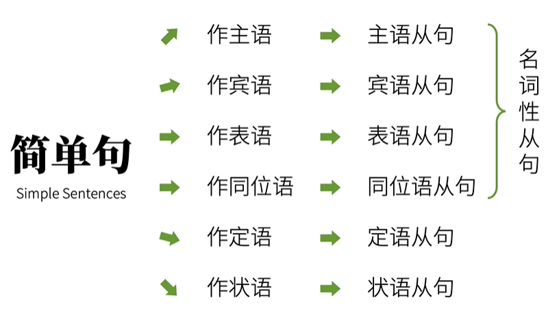1.4 词性（词类）
- 动词
- 名词，表人和物： Papa Rabbit is a rabbit.
- 冠词，英语中说明人和事务：Papa Rabbit is a rabbit.
- 代词，替代人和物：_I_ am a rabbit.
- 形容词，形容人和物：I am a smart rabbit.
- 数词，表数量：I ate two carrots.
- 副词，修饰动词或形容词： I ate two carrots quickly.
- 介词，表示和其他词关系的词：I ate two carrots with chopsticks.
- 叹词，表感叹：_Ah_，The carrot is tasty!
- 连词，连接词语和句子：I ate two carrots and a potato,because I was hungry.
【NOTICE】句子成分 不等于 词类
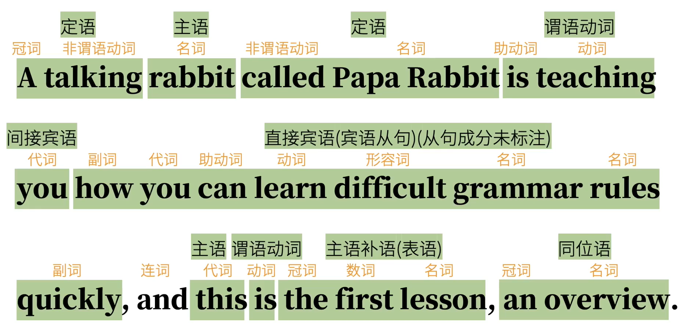1.5 谓语动词的三大本领
- 动作的时间(Tense)：现在，过去，将来，过去将来
- 动作的状态(Aspect)：一般，完成，进行，完成进行
- 动词的语气(Mood)：动作的假设，情感…
- 虚拟语气：If I were a rabbit…
- 陈述语气：I ate a carrot and …
- 祈使语气：Eat this carrot and …
【NOTICE1】动作的时间和时间称为句子的时态，共16种
| 时态 | 一般 | 完成 | 进行 | 完成进行 |
|---|---|---|---|---|
| 现在 | 一般现在 | 现在完成 | 现在进行 | 现在完成进行 |
| 过去 | 一般过去 | 过去完成 | 过去进行 | 过去完成进行 |
| 将来 | 一般将来 | 将来完成 | 将来进行 | 将来完成进行 |
| 过去将来 | 一般过去将来 | 过去将来完成 | 过去将来进行 | 过去将来完成进行 |
1.6 助动词
【助动词的作用】谓语动词往往无法单独完成上面说的三大本领和其他本领，这是就需要组动词的协助：
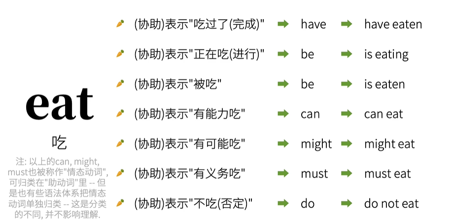1.7 非谓语动词
非谓语动词几乎可以取代所有的从句，从而简化句子。不过这些动词就不再具有表示动作时间、状态、语态和语气的功能。
非谓语动词： 动词不定式，现在分成，动名词，过去分词
非谓语的难点：
谓语动词与不定时的区分
现在分词、动名词和谓语动词进行时的区分
过去分词与谓语动词完成时的区分
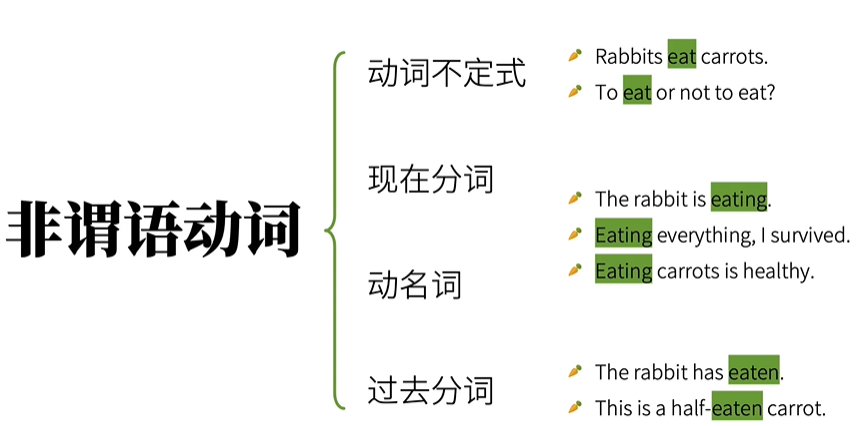
1.8 个人总结：英语语法的核心在于动词
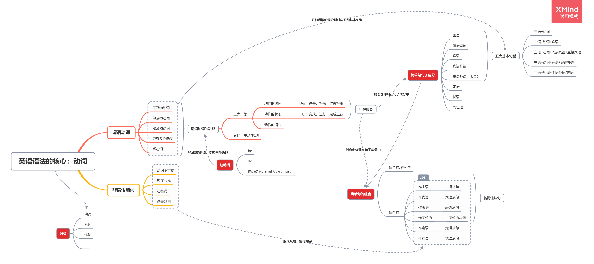2 动词
2.1 动词的分类
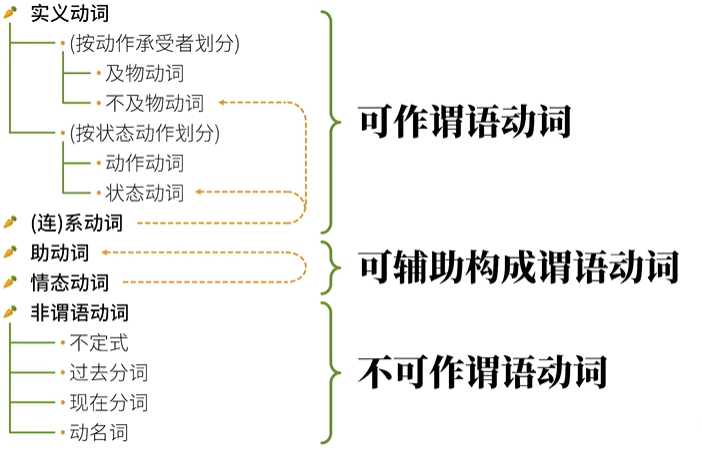- 在传统语法中，系动词被单独拿出来，但有些语法书把系动词归类为不及物动词/状态动词
- 有些语法书把情态动词也归类为助动词
- 动词分类还有很多，不要过分纠结动词的分类
2.2 动词的时态（时间和状态）
动词的时态有许多争议，本教程立足于国内的语法教程，为的是讲清楚，而不是创新
2.2.1 动词的时间：
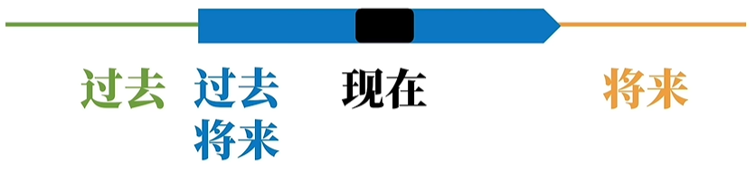
- 过去将来是指以过去的时间点为起点，然后计算将来发生的事情
- 过去将来时在现实中并不常见，一般只出现在从句中
- 过去将来完成进行时就更少见，只是来说明英语动词有能力构成这种时态，所以要列举出来
2.2.2 动词的状态：
- 一般：没有状态
- 完成：动作已经完成/事情已经发生，并不知道动作发生的时间
- 进行：动作/事情正在发生
- 完成进行：动作/时间已经发生，且还在继续
2.2.3: 动词的时态：时间+状态
动词的时间与状态连系的非常紧密，不可拆分。这里拆分只用于教学目的
现在的时间
现在进行时：这兔子正在吃胡萝卜，对现在而言，正在进行的动作
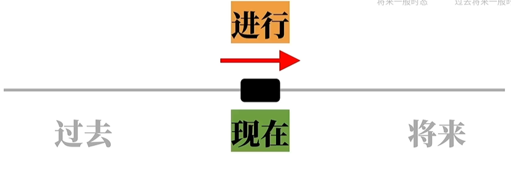现在完成时：这兔子已经吃完了胡萝卜，对现在而言，正在动作已经完成
现在完成进行时：这兔子已经吃完了一些胡萝卜，还要继续吃。对现在而言，正在动作已经完成，且动作会持续到将来
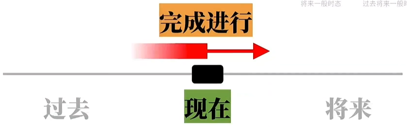一般现在时：兔子吃胡萝卜。对现在而言，没有特别指出的状态，指出一个事实或者习惯
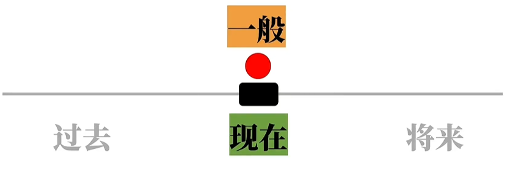
过去的时间
过去进行时：昨天下午3点，这兔子正在吃胡萝卜
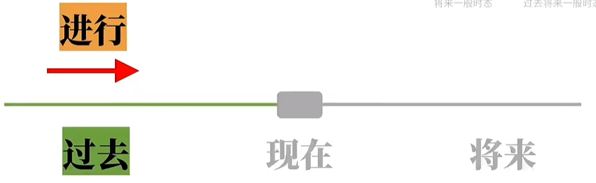过去完成时：昨天下午3点，这兔子吃完了胡萝卜
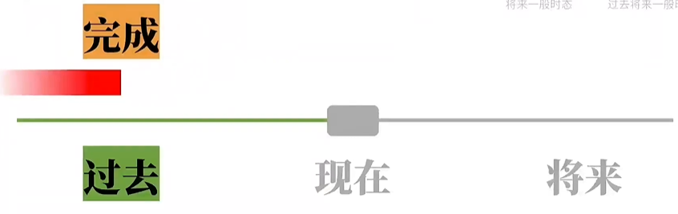过去完成进行时：昨天下午3点，这兔子已经吃完了一些胡萝卜，还要继续吃，吃到什么时候不得而知
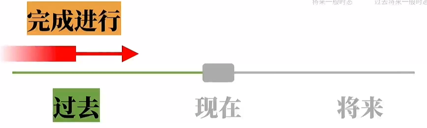一般过去时：兔子过去出来胡萝卜，只是单纯表示这个动作发生在过去
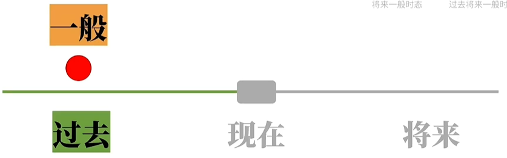
将来的时间
将来进行时：这兔子明天下午3点那个时候会真正吃胡萝卜。
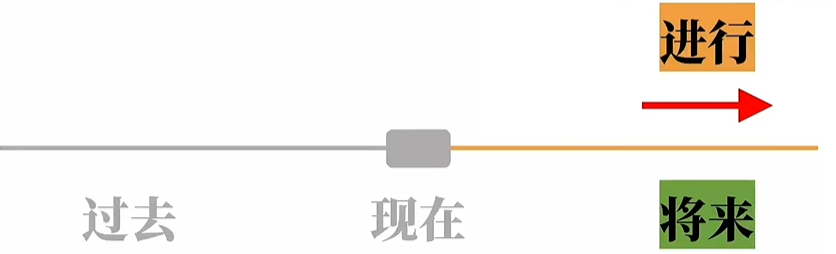将来完成时：那兔子明天下午3点那个时候会已经吃完胡萝卜，之前什么时候开始吃不知道
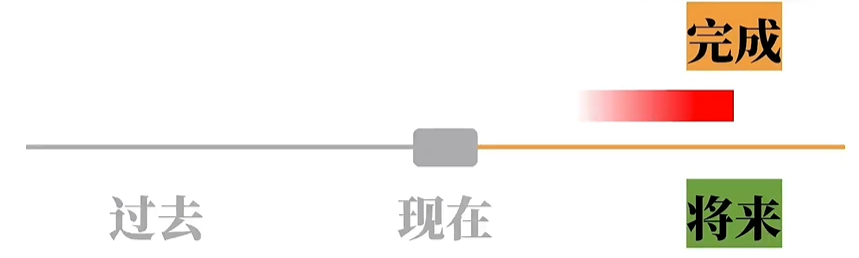将来完成进行时：这兔子明天下午3点已经吃完了一些胡萝卜，还要继续吃，什么时候开始吃，什么时候结束吃，我们都不知道
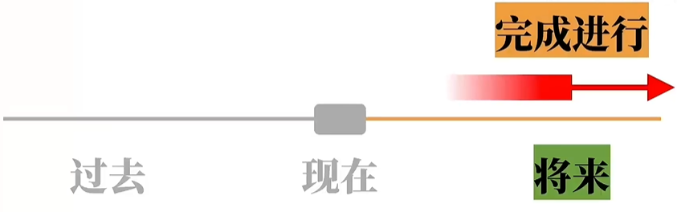一般将来时：兔子将来吃胡萝卜，只是单纯表示这个动作将来会发生
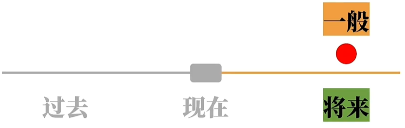
过去将来的时间：这个时间比较抽象，有些语法书甚至不收录
过去将来进行时：A在三个月前被B打了，A被打一个月后，说：我在未来的某个时间点我会正在打B。
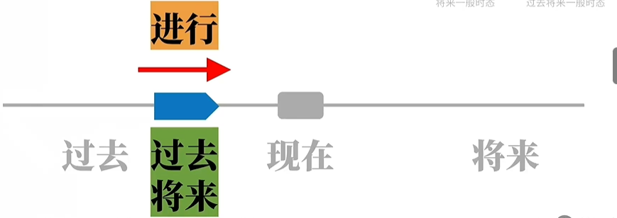过去将来完成时：A在三个月前被B打了，A被打一个月后，和我说，在下个星期的某一天，你会知道我已经把B打了一顿。我们不知道什么时候打的。只知道已经打完了。
过去将来完成进行时：：A在三个月前被B打了，A被打一个月后，说：将来的某一天，你会发现B会被我打，而且我会一直打下去
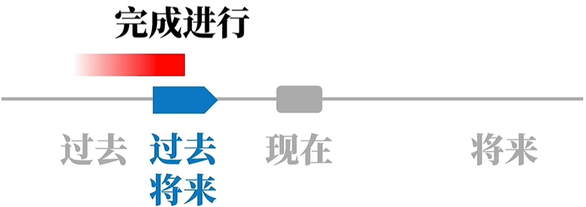一般过去将来时:：A在三个月前被B打了，A被打一个月后，说：我会在将来的某个时候打B一顿
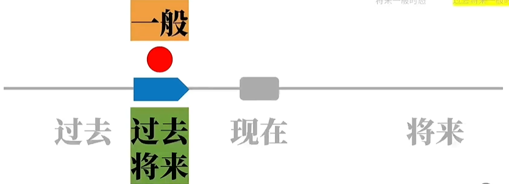
2.2.4 现在时态
一般现在时态
表达：+动词原形/动词原形的复数形式
【用法一】表达事实
I eat carrots. carrots用的是复数，表示泛指。表示：我吃胡萝卜这种食物的。这是一个事实陈述
The rabbit eats carrots. 表示：兔子是吃胡萝卜的动物。也是事实陈述
The sun rises in the east. 太阳从东边升起。
The earth revolves around the sun. 地球绕太阳转。
I eat a carrot.a carrot 表示某个胡萝卜。每天吃某个胡萝卜？？？
I go to lunch.如果母语人士听到这句会，会举得哪里不对，就会找你确认：
Do you mean you’re going for lunch now?你现在去吃午饭么？
如果加一个时间副词：I go to lunch now.也不对，因为now常和现在进行时连用。
【用法二】表达习惯/重复的动作
其实可以归类到表达事实上
I play basketball. 我打篮球。这里表达我有打篮球的习惯。
【用法三】表示预计会发生的事情（将来）
The bus leaves at 8PM tonight. 公车晚上8点离站。实际上的感觉也像是在陈述一个事实。
我们也可以改成一个习惯/重复的动作： The bus leaves at 8PM tonight every day.
现在进行时态
表达：be + 动词的现在分词（v-ing）。 这里的be是助动词，当然be还有系动词的词性
现在分词
- 通常：v + ing
- 在动词原型的基础上作一些改变: 出于发音的需要
- write ➡ writing
- hit ➡ hitting
- die ➡ dying
- The rabbit is eating a carrot.( 这兔子现在正在吃胡萝卜的过程中/状态 )
- You are watching my video.( 你现在处在看我的视频的过程中 )
- I am thinking of you.( 我现在处在想你的过程中 )
现在完成时态
表达：助动词have的变位 + 动词的过去分词
动词的过去分词
- 通常：+ed
- 不规则变化：
- eat ➡ eaten
- bring ➡ brought
- feel ➡ felt
- 过去分词 ≠ 过去式
例句
I eat carrots. 表示一个事实。我吃或萝卜这种食物
- I have eaten carrots. 我吃过胡萝卜。 言下之意：我吃过胡萝卜这种食物。
- I hava eaten a carrot.我吃过一个胡萝卜。言下之意：我已经吃过一个了，已经不饿了。
The rabbit has eaten a carrot. 这兔子到目前为止已经吃了个胡萝卜
You have watched my video. 你到现在为止已经看过我的视频了。
I have thought of you. 我到现在为止已经想过你了。
表达的是，动作到目前为止,动作已经已经完成了。
现在完成进行时
表达：have变位 + been + 动词的现在分词
例句
The rabbit has been eating a carrot. 兔子到现在为止已经吃完了一个胡萝卜，之后还会继续吃
You have been watching my video. 你到现在为止已经看了我的视频一段时间了，还会再看一段时间
I have been thinking of you. 我到现在为止已经想你一段时间了，还要继续想你。
以上三个例句表达的是：一个动作到现在为止已经完成了，且该动作仍然会持续
2.2.5 过去时态
一般过去时态
表达： +动词过去式
动词过去式：
动词过去式 ≠ 动词的过去分词 》》 ate ≠ eaten
通常：+ed
存在不规则的变化：
- do >> did >> done
- go >> went >> gone
- take >> took >> taken
一般过去时态的含义：过去某个时点事实/时间的陈述
The rabbit ate a carrot. 只知道这个兔子过去某个时刻在吃胡萝卜
You watched my video. 你看了我的时视频。对过去的描述。可能的言下之意，这是事实，不要抵赖
I thought of you. 我想了你。 可能的言下之意，这是事实，不骗你。
I play basketball. 言下之意：我经常打篮球，它是我的兴趣爱好。（表达现在的习惯动作）
I played basketball. 我打过篮球。并不能看出这是不是重复习惯的动作。
I used to play basketball. 我曾经经常打篮球。（描述过去的习惯动作）
过去进行时态
表达：was/were + 动词的现在分词
例句
The rabbit was eating a carrot.
You were watching my video.
I was thinking of you.
以上三个例句表达的都是过去某一个时间点的动作。
现在完成时态 VS. 一般过去时态 VS. 过去进行时态
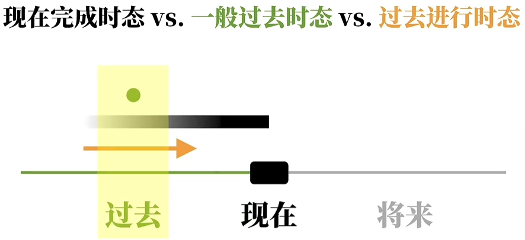三个时态都有表示过去的动作，三个有什么区别呢？
【现在完成时态 VS. 一般过去时态】
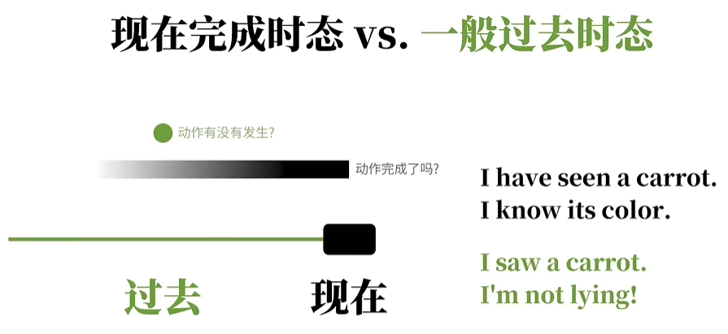现在完成时强调：动作完成了吗。
I have seen a carrot.I know its color.
强调我看过胡萝卜。我知道胡萝卜长什么样一般过去式：强调动作有没有发生。强调事实。
I saw a carrot. I’m not lying!
强调看过胡萝卜这个动作/事实发生了。I have gone to Shanghai.
这是在强调，我去上海这个动作已经发生了，对现在造成影响（即现在还没回来）。
所以这个对话可能是发生在电话/其他见不到面的情况
Are you looking for me? Sorry, I have gone to Shanghai(so you can’t find me).I went to Shanghai.
多半暗示我已经回来了。强调“去上海”这个动作发生过。单纯描述：我曾经去了上海这件事情。
I went to Shanghai. I am back.
【一般过去时态 VS. 过去进行时态】
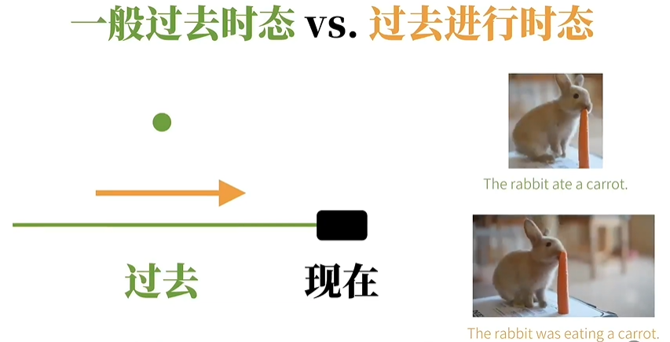一般过去时：重点在某个动作做了没有
过去进行时：重点在某个动作在某个时间里时在进行的过程中
过去完成时态
表达：had + 过去分词
含义: 表达的时过去的一点B的动作对过去一点A的影响。B是A的过去。
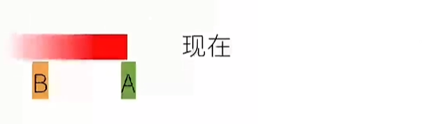I had eaten 5 carrots for lunch yesterday, so I wasn’t hungry at all yesterday afternoon.
这里要表达的意思就是，对于昨天下午(时间点A)来说,因为昨天下午的过去(时间点B,也就是中饭时间)，我已经吃了一堆胡萝卜,
所以B对A有影响——这个影响就是:我一点都不饿.He tried to find me yesterday afternoon, but I had already gone to Shanghai.
对于他试图找我那个时间点A(昨天下午)来说, A的过去某——点B(可能是昨天上午，或前天，没说明，但是肯定是昨天下午之前)我已经离开了,去上海了,
所以B对A有影响——这个影响就是:他找不到我The rabbit had eaten a carrot.
You had watched my video.
I had thought of you.
以上三句话都表达的是：动作过去的某个时间点已经完成了。
过去完成进行时态
表达：had + been + 现在分词
例句
The rabbit had been eating a carrot.
You had been watching my video.
I had been thinking of you.
以上三个例句表达的都是：一个动作在过去的某时间点已经完成，之后在该时间点还会继续。
2.2.6 将来时态
英语中“表达”将来时态
- 一般现在时态可以表达将来的动作,如: The bus leaves at 8PM.实际是描述将来的事情，但是我们把它当作事实来描述。
- 助动词be的变位+ going + to +动词原形，如: I am going to eat a carrot. 这里说的是（很快）将要吃胡萝卜
- 甚至.上句的going也可以省略,便为助动词be的变位+ to +动词原形,如:You are to eat a carrot. 有点命令的意味
- 又或者也可以用介词about取代going,即: + about + to+动词原形,如: I am about to eat a carrot.
- 用will/shall（助动词）实现将来时态，这是最常见的
一般将来时
表达： will + 动词原型
描述：将来某个时间点发生的动作（说话者十分确定会发生的事情）
- The sun will rise again tomorrow. 太阳明天也会照常升起.
- I will definitely do my best to make high-quality videos. 我以后也一-定会尽全力做高质量视频.
如果不太确定，就不能用一般将来时态。（要借助动词的“语气”）
将来进行时态
表达：will + be + 现在分词
描述:在将来某个时间，某个动作是在进行的过程中.
- I will be eating a carrot for lunch tomorrow from 1PM to 3PM .(我明天午饭会在吃萝卜这个动作过程中.)
- 将来进行时要比一般将来时更加笃定
将来完成时态
表达：will + have + 动词的过去分词
描述：到将来的某个时间点A之前，动作以及完成。完成的时间点是A。A时间点不能确定。现在 << B << A。 且该动作的完成会对A时间点的动作/状态产生影响
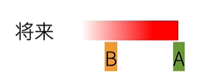I will have finished making the video by 4PM tomorrow, so I can publish it after that.
这里要表达的意思就是,对于明天下午4点钟那个时间点(A点)来说,我在那之前就会完成做视频这个动作,所以对明天下午4点钟那时候是有影响的
——什么影响呢,明天下午4点钟之后我就能够发视频啦.
If suddenly you forget me
Do not look for me
For I shall already have forgotten you
这里的I shall already have forgotten you就是将来完成时态，shall在这里相当于will.这句话意思是,
如果你将来忘记我的话，也没必要寻找我，因为,对于你将来忘记我的那个时间点来说,我已经在之前就忘记你了(完成了忘记你这个动作了).
The rabbit will have eaten a carrot.
You will have watched my video.
I will have thought of you.
以上三个例句强调：动作在将来的某个时间点前已经完成。
这个将来完成时态又要比将来进行时态更加笃定。
将来完成进行时态
表达： will + have + been + 现在分词
描述：对于将来某个点，动作不但已经完成一部分，而且还要继续进行
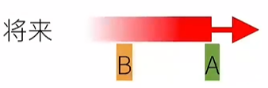对于将来某个时点A，动作已经完成了，在A之后还会继续这个动作
I will have been eating carrots for 2 hours by 3PM tomorrow.
这里要表达的意思就是:我确定明天下午三点钟时,我不但已经吃了俩钟头胡萝卜(也就是从明天下午1点开始吃)而且还要继续吃.
这个时态一般很少用到，因为用一般将来时和将来完成时已经可以表达相似的情况。
2.2.7 过去将来时态
过去将来时，是站在过去的某一个时间点看将来。
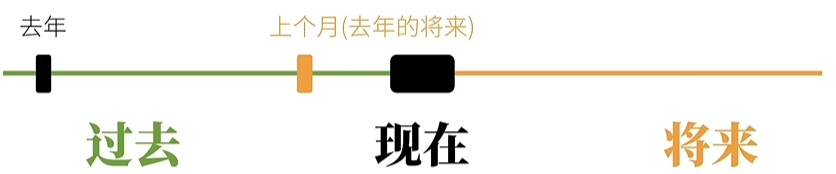去年说上个月要开始做视频，对于去年来说，上个月就是（去年的）将来
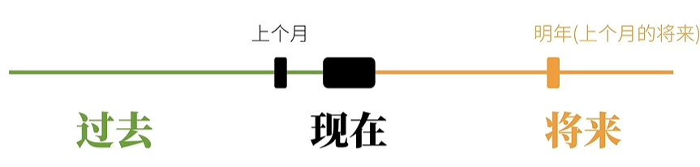上个月说我明年要出书，那么明年就是（上个月的）将来
过去将来时常见于从句中
所以过去将来时，实际上和现在无关
一般过去将来时
表达： would + 动词原型
I said I would eat a carrot for lunch.我(之前)说过我会午饭吃根胡萝卜.
(午饭时间对于之前我说那句话的时间来说是在将来,但至于现在午饭时间有没有到,不得而知.)
I knew you would watch my video.我(之前)就知道你会看我的视频.
(你看我视频这件事多余我做出这个判断的时间来说是在将来.)
be(is/are)+ going to : 可以表示一般将来时态
be(was/were)+ going to : 可以表示一般过去将来时态
I said I would eat a carrot for lunch. = I said I was going to eat a carrot for lunch.
I knew you would watch my video. = I knew you were going to watch my video.
Would 的多义
I said I would eat a carrot for lunch.我(之前)说过我会午饭吃根胡萝卜. (will的过去式变位，构成时态.)
If I were you, I would eat a carrot.如果我是你，我会吃根胡萝卜. (构成动词eat的虚拟语气:我不可能是你，所以这里的”吃’是”虚拟”动作.)
Would you pass me the carrot, please?能请你把胡萝卜递过来吗? (比Will you pass me the carrot?更礼貌)
Would you like a carrot for lunch?你是否中饭想吃胡萝卜? (比Do you want a carrot for lunch?更礼貌.)
过去将来进行时态
表达：would + be + 现在分词
I said I would be eating a carrot at 1PM tomorrow/yesterday.我(之前)说我明天下午1点会在吃胡萝卜.
(我之前说我明天/昨天下午1点会是在吃胡萝卜这个过程中。)
过去将来完成时态
表达：would + have + 过去分词
I said I would have eaten a carrot by 1PM tomorrow/yesterday.我(之前)说我明天/昨天下午1点会已经吃掉了根葫萝卜.
(我之前说我明天/昨天下午1点会已经做完了吃胡萝卜这个动作.)
过去将来完成进行时
表达：would + have + been + 现在分词
I said I would have been eating lunch for 2 hours by 1PM tomorrow/yesterday.
我(之前)说我明天/昨天下午1点前会已经吃了俩钟头中饭。
(我之前说我会明天/昨天下午1点时在吃中饭这个过程中，之前吃了2钟头，之后还会继续吃。）
2.2.8 时态总结
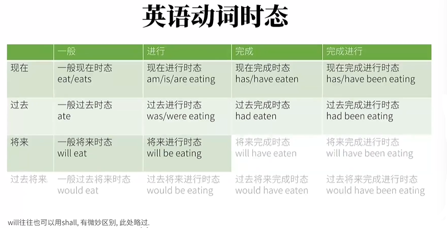灰色：不常用
2.3 语气
2.3.1 陈述语气：描述事实
The rabbit ate the carrot. 这个兔子吃了这胡萝卜。
我们大部分用到的就是陈述语气
2.3.2 祈使语气： 命令/请求
Rabbit, eat the carrot! 兔子，吃这胡萝卜!
祈使语气的用法：
- 用第二人称(“你”)用一般现在时态
- 去掉”你”,并保证动词原形
You eat the carrot! >> Eat the carrot!
You don’t eat it! >> Don’t eat it!
You are quiet! >> Be quiet!
You never give up! >> Never give up!
You give me coins! >> Give me coins!
2.3.3 虚拟语气 :
【用法一】 表“不可能”假设
- 和现在事实相反
- 条件句:过去式
- 主句: would +动词原形
- If I knew it，I would tell you.
- If I were you, I would give this video a thumbs-up.
- 对于be，统一用 were
- 和将来事实相反：将来时间里，可能性很小的动作
- 条件句: should +动词原形 （should 是 shall的过去式）(这里的也可以用were to 来替代)
- 主句: would +动词原形
- If I should meet thee（你） after long years, how should I greet thee?
万一我们将来重逢了,我又该如何面对你呢? 言下之意:咱俩相会遥遥无期.情态动词的过去式变位：
shall >> should
will >> would
can >> could
may >> might
- 和过去事实相反：
- 条件句: had+动词过去分词
- 主句: would have +动词过去分词
- If I had watched this video before, I would have aced(在……中取得好成绩) my test.
我要是之前就看了这视频，那绝对能考个好成绩.
【用法二】 表达愿望，请求，建议，命令等，也就是希望某个动作/事件 发生
- 对现在的愿望: wish + 动词过去式
- I wish that I were a rabbit. 我希望我是只兔子.
- be 统一用 were
- that 可省略
- I wish that I were a rabbit. 我希望我是只兔子.
- 对过去的愿望：wish + had/would have +动词过去分词
- I wish (that) I had eaten the carrot. 我希望我吃了那只胡萝卜.言下之意：没吃到那个胡萝卜
- 对将来的愿望: wish + should/might/could/would +动词原形
- I wish (that) I could eat the carrot. 我希望我能吃那只胡萝卜. 言下之意：很可能吃不到那个胡萝卜，伤心。
- 用法二经常使用wish，但实际上还可以使用其他词
- would rather
- 对现在的希望：I would rather that you didn’t eat the carrot. 我宁愿你（现在）不会吃那胡萝卜.
- 对过去的希望：I would rather that you hadn’t eaten the carrot. 我宁愿你没吃掉那胡萝卜（已经吃了）
- would rather do A than do B(宁愿做A也不愿做B): Kids would rather play than study.孩子们宁愿玩而不愿学习。
- demand/suggest/insist/order should +动词原形： should 可以省略
- 现在的请求：I demand/suggest/insist/order that you （should） give me a carrot. 我要求/建议/坚持/命令你给我一根胡萝卜。
- 过去（之前的请求）：I demanded/suggested/insisted/ordered that you （should） give me a carrot. 我要求/建议/坚持/命令你给我一根胡萝卜。
- 上面使用宾语从句的形式来表达命令/请求等语气，还可以用其他形式
- I suggest that you (should) eat a carrot. (宾语从句)
- It is suggested that you (should) eat a carrot. (主语从句)
- The suggestion is that you (should) eat a carrot. (主语补语/表语从句)
- It is (high) time that you ate a carrot. (定语从句)
- high在这里表示早该这么做了
- 这里的ate也是虚拟语气
- would rather
2.4 非谓语动词
2.4.1 谓语动词与非谓语动词
- 谓语动词：是被主语限定的动词，可以表达动作的时间，状态和语气
- The rabbit eats a carrot.
- The rabbit ate a carrot.
- The rabbit is eating a carrot.
- The rabbit has eaten a carrot.
- 上面的eat 受到了主语的限制，同时出现了时间，状态和语气的变化
- 限定性动词
- 非谓语动词：非限定性动词，不受主语的限制，失去了表达时间，状态和语气的本领
- I like to eat carrots.
- I liked eating carrots.
- I am a talking rabbit.
- The rabbit likes minced carrots.
- 谓语动词（限定性动词）：like，liked，am，likes
- 非谓语动词（非限定性动词）：to eat，eating，talking，minced
- 谓语动词是句子的核心，非谓语动词只会出现在非核心部分
2.4.2 动词不定式
- 形式：to + 动词原型：
- To be or not to be, that is the question. 生存还是毁灭,这是一个问题.
- 有时候to可以省略：You helped me (to) cook the carrot. 你帮我烧(做菜)了胡萝卜.
- 不定式作主语
- To eat a carrot every day is good for the rabbit. 一天吃一根胡萝卜对兔子有好处.
- 常用it作“不定式主语”的形式主语，避免头重脚轻的情况
- It is good for the rabbit to eat a carrot every day. 一天吃一根胡萝卜对兔子有好处.
- 也可改成带形式主语的主语从句：that the rabbit eats a carrot every day 是主语
- It is good that the rabbit eats a carrot every day. 天吃一根胡萝卜对兔子有好处.
- 不定式作宾语
- I like to eat carrots.
- 并不是所有的动词都可以加不定式作宾语
- 形式宾语：
- I consider it important to eat a carrot every day. 我发现每天吃一个胡萝卜很重要.
- I consider to eat a carrot every day important . 我发现每天吃一个胡萝卜很重要.
- important作的是宾语补足语
- 不定式作宾语补语
- The rabbit expected the wolf to eat a carrot. 兔子指望狼吃一根胡萝卜.
- 使役动词接宾补时，要省略to
- 使役动词：see find watch have make let
- Carrots make the rabbit feel happy. 胡萝卜使兔子感到快乐.
- 有些动词可以省略to，也可以不省略，都是正确的表达
- The wolf helped the rabbit grow carrots. 狼帮兔子种胡萝卜.
- The wolf helped the rabbit to grow carrots. 狼帮兔子种胡萝卜.
- 不定式作表语（主语补语）
- The rabbit’s dream is to eat every kind of carrot in the world. 兔子的梦想就是吃掉世界上每一种胡萝卜.
- 可以改成不定式作主语：To eat every kind of carrot in the world is the rabbit’s dream.
- 不定式作定语
- The rabbit has a lot of carrots to eat. 兔子有很多胡萝卜要吃.
- 不定式to eat作后置定义修饰carrots。
- 一种动宾关系：eat carrots
- The rabbit has a lot of carrots to eat. 兔子有很多胡萝卜要吃.
- 不定式作状语：原因、目的和结果
- 表原因：I was surprised to get a thumbs-up. 我很吃惊(因为)得到一个赞.
- I was surprised because I got a thumbs-up. 我很吃惊,因为有人给我点赞了.
- 表目的：I will do anything to get a thumbs-up. 我为了得到一个赞会做任何事.
- I will do anything in order that I get a thumbs-up. 为了点赞量我能做出任何事.
- 表结果：I got enough thumbs-up to make another video. 我得到足够的赞,可以去做另一个视频啦!
- I got enough thumbs-up, so that I made another video. 我得到了很多点赞，于是我做了另一个视频.
- 表原因：I was surprised to get a thumbs-up. 我很吃惊(因为)得到一个赞.
- 高级不定式：to + 有状态的动词原型，但实际还是不受时间限制
- The rabbit seemed to be eating a carrot. 这兔子之前似乎在吃一根胡萝卜(的过程中).
- The rabbit will appear to have eaten a carrot. 这兔子之后会看起来像是吃过了一根胡萝卜，
- 以上用法其实比较少见
2.4.3 动名词
- 形式：v + ing。
- 动名词的本质：名词。名词在句子中作的成分，动名词都可以承担
- 动名词作主语
- Eating carrots is healthy for the rabbit. 吃胡萝卜(这个行为)对兔子来说很健康.
- Carrots are healthy for the rabbit. 胡萝卜对兔子来说很健康.
- Eating carrots is healthy for the rabbit. 吃胡萝卜(这个行为)对兔子来说很健康.
- 动名词作表语
- The rabbit’s hobby is growing carrots. 兔子的爱好是种胡萝卜.
- Seeing is believing. 眼见为实. 【直译:看到(这个行为)就是相信(这个行为).】
- 动名词作定语
- a sleeping（定语） pill = a pill for sleeping（名词）
- sleeping（定语）是为了说明pill的用途，是为了睡眠用的
- a sleeping（定语） pill = a pill for sleeping（名词）
- 动名词作宾语
The rabbit likes eating carrots. 兔子喜欢吃胡萝卜.
所有的动词都可以用动词名词和动词不定式作宾语么？
- 有些动词不可以接动词不定式，只能接动名词形式
- avoid，advise，consider， escape， mind，practice，
- insist on，give up，feel like，put off
- 以上这些单词都需要接动名词
- 介词 + 宾语（只能是动名词）
- The rabbit is fond of eating carrots. 兔子喜欢吃胡萝卜.
- The rabbit is looking forward to seeing the wolf again. 兔子期望再次见到狼.
- 有些动词不可以接动词不定式，只能接动名词形式
动名词作宾语与动词不定式作宾语的区别：
The rabbit stopped to eat a carrot. 兔子停下(手里的活)去吃一根胡萝卜,
stop to do sth: 表示停下手中作的事情，去作（to do） 另一件事
The rabbit stopped eating a carrot. 兔子停止吃一根胡萝卜.
stop doing sth : 停下手中正在作的事情（doing sth）
The wolf forgot to invite the rabbit to her party. 狼忘记邀请兔子去她的聚会，
forget to do sth : 忘记去作某事，事情还没有作
The rabbit forgot accepting the wolf’s invitation. 兔子忘记接受过狼的邀请.
forget doing sth : 忘记做过某事，事情已经作过滤
动名词有正在做、习惯性做的时间含义。（不是时态哦）
like doing sth表示长时间的喜欢做某事,指兴趣爱好.在意义上比较一般和抽象,时间观念不强,不指某一次动作;
I like watching TV.我喜欢看电视.
Do you like singing 你喜欢唱歌吗?
She likes swimming.她喜欢游泳.（经常性的,爱好）
I like eating fish .(我喜欢吃鱼,个人口味而已,一种爱好,喜欢）不定式有还没有做、将要去做的时间含义。（不是时态哦）
like to do sth 想去做某事（表示有个趋向性,好像是要到某处去做某事），
常指某个具体的动作,表示偶尔一次喜欢做某事、或者突然喜欢干某事.She likes to swim this afternoon.她今天下午想游泳.（特指某一次的动作）
另外,在搭配(使用方法)上,“like to do”一般与“would”搭配表示意愿.
I would like to swim with you.我愿意和你去游泳.
Would you like to skate 你愿意去滑冰吗?
2.4.4 现在分词
- 形式上：v+ing
- 现在进行时= be + 现在分词。 这不等于现在分词具有现在的时间。非谓语是不具有表示时间的能力的。
- 现在分词相当于形容词，形容词可以作的，现在分词也可以作
- 现在分词作定语: a talking rabbit
现在分词与动名词的区别
动名词作相当于名词，可以作定语，说明药片的性质、功能和用途
a sleeping pill (动名词作定语) = a pill for sleeping现在分词相当于形容词，可以作定语，来修饰兔子的状态。sleeping 在睡觉，我们只知道兔子的状态，但不知道时间（现在/过去/将来）
a sleeping rabbit ≠ a rabbit for sleeping - 现在分词作表语
- The rabbit is smart. 兔子是聪明的.
- The rabbit is charming. 兔子是有魅力的.，
- The story is interesting(adj.).故事是有趣的。 >> interest v.
- The game is exciting(adj.). 游戏是刺激的. >> excite v.
- The news is encouraging(adj.). 新闻是鼓舞人心的. >> encourage v.
- The rabbit is smart. 兔子是聪明的.
- 现在分词作宾语补语
- The wolf saw the rabbit eating a carrot. 狼之前看到兔子正在吃一根胡萝卜.
- rabbit是宾语。 eating a carrot 作宾补。 表示正在吃一根胡萝卜。
- The wolf saw the rabbit (to) eat a carrot. 狼之前看到兔子吃了根胡萝卜.
- (to) eat a carrot: 不定式作宾补。to可以省略。表示看完吃萝卜的全过程
- 现在分词作宾补 VS. 不定式作宾补
- 不定式作宾补： 表示一个动作自始至终的全过程，强调动作已经发生
- 现在分词作宾补： 表示动作正在进行中，强调动作进行的状态
- The wolf saw the rabbit eating a carrot. 狼之前看到兔子正在吃一根胡萝卜.
- 现在分词作状语：表示时间，原因,条件,结果,让步。国的,方式和伴随情况等
- 时间： Hearing the news, the rabbit became excited. 听到这个消息,兔子很激动.
- 相当于时间状语从句：When he heard the news, the rabbit became excited. 听到这个消息时,兔子很激动.
- 原因：Not knowing what to eat, the rabbit skipped lunch. 不知道吃什么,兔子没吃中饭.
- 相当于原因状语从句：Because he didn’t know what to eat, the rabbit skipped lunch. 因为不知道吃什么,兔子没吃中饭.
- 时间： Hearing the news, the rabbit became excited. 听到这个消息,兔子很激动.
2.4.5 过去分词
形式上：v + ed
- 有许多不规则的过去分词：
- eat >> eaten
- see >> seen
- cut >> cut
- grow >> grown
- tell >> told
- 有许多不规则的过去分词：
过去分词不表示时间，只是表示被…的状态
过去分词也相当于形容词
过去分词作定语
- 单个过去分词作定语：放在修饰词的前面（像普通形容词一样）
- a minced carrot 一根绞碎的胡萝卜
- a painted room 一个漆过了的房间
- an excited rabbit 一只激动的兔子
- 过去分词短语作定语：定语后置（后置定语）
- The carrot cake eaten by the rabbit is delicious. 被兔子吃了的胡萝卜很美味.
- 单个过去分词作定语：放在修饰词的前面（像普通形容词一样）
过去分词作表语
- The rabbit is interested in growing carrots. 兔子对种胡萝卜感兴趣.
现在分词作表语 VS 过去分词作表语
现在分词作表语：现在分词暗含主动关系,即被描述的是做出动作的人物。
The story is interesting. 故事很有趣.
the story is interesting 暗含的意义是故事让人感到有兴趣。过去分词作表语：而过去给词暗含被动关系。即被描述的是动作的接受者，
The rabbit is interested. 兔子很有兴趣.
the rabbit is interested 暗含的意义是，兔子被某事棠物引起了兴趣。The rabbit was frightened. 兔子感到害怕.
The rabbit was frightening. 兔子令人感到害怕.I am interested. 我被某人/某物引起了兴趣.
I am interesting. 我引起了某人的兴趣.
- The rabbit is interested in growing carrots. 兔子对种胡萝卜感兴趣.
过去分词作宾补
- The rabbit found his carrot stolen. 兔子发现他的胡萝卜被偷了.
过去分词作状语
- 地点：Seen from the hill, the carrot field looks beautiful. 从山上看,胡萝卜田看.上去很美.
- the carrot field 和 Seen 是一种被动的关系，所有用过去分词
- 原因：Born in a rabbit family, the rabbit has been growing carrots all his life. 由于出生在一个兔子家庭里,兔子种了一辈子胡萝卜.
- 条件：Given another chance, the rabbit would go to the wolf’s party. 如果再给兔子一次机会,他会去参加狼的聚会.
- 地点：Seen from the hill, the carrot field looks beautiful. 从山上看,胡萝卜田看.上去很美.
现在分词表主动，过去分词表被动
- Seen from the hill, the carrot field looks beautiful. 从山上看,胡萝卜田看上去很美.
- Seeing the carrot field, the rabbit ran towards it. 看到胡萝卜田，兔子朝着它跑去.
2.4.6 独立主格：就是让句中只含有一个谓语动词，其他的变成非谓语动词（过去分词/现在分词）,用一个简单句写出来。
- The work finished, the rabbit went home. 工作完成后，兔子回家了.
- finished修饰的是The work，表被动
- 相当于一个并列句：The work was finished, and/so the rabbit went home.工作完成后,兔子回家了.
- 或者从句：After the work was finished, the rabbit went home. 工作完成后，兔子回家了.
- went 是 一个谓语动词
- finished修饰的是The work，表被动
- The weather permitting, the rabbit will go out. 天气允许的话，兔子就出门.
- If the weather permits, the rabbit will go out. 天气允许的话,兔子就出门.
2.5 再论独立主格
- 如何理解独立主格
- 原因状语从句：Because he was invited by the wolf, the rabbit decided to go to the party. 因为兔子被狼邀请了,所以兔子决定去参加聚会.
- 现在分词表原因：Invited by the wolf,the rabbit decided to go to the party.
- 这the rabbit是被Invited。the rabbit是Invited的对象
- 独立主格：The wolf inviting him,the rabbit decided to go to the party.
- The wolf 和 inviting 之间是主动关系
- The wolf 是逻辑主语，这就是独立主格中的”主格“
- 因为the wolf是游离于真主语the rabbit之外的，称之为”独立“
- 名词 + 现在分词：现在分词表主动
- If the weather permits, the rabbit will go out. 如果天气允许,兔子就会出门.
- The weather permitting, the rabbit will go out.
- If the weather permits, the rabbit will go out. 如果天气允许,兔子就会出门.
- 名词 + 过去分词：过去分词表被动
- After the work was finished, the rabbit went home. 工作完成后，兔子回家了.
- The work finished, the rabbit went home.
- The rabbit is lying in bed and a carrot is still held in his hand.
- The rabbit is lying in bed,a carrot still held in his hand.
- After the work was finished, the rabbit went home. 工作完成后，兔子回家了.
- 名词 + 动词不定式：动词不定式表将要发生的动作
- The rabbit to come, the wolf is overjoyed. 兔子要来,狼乐翻天.(名词+动词不定式)
- 名词 + 名词
- Many animals went to the party, some of them rabbits and wolves. 许多动物去了聚会,它们中的一些是兔子和狼.
- some of them：名词/不定代词
- rabbits and wolves： 名词
- 在原视频中有这么一个注释：这里因为是不定代词(短语),后面才能直接跟名词/形容词。我的观点是它的意思的其他人称代词不能省略being，或者说要加上being才能成立
- 在网上查了一下：名词 + 名词的形式比较少见，网上又找了一些例句
- His book now a bestseller, he felt pleased with the world. 他的书成了畅销书，他对一切都满意了。
- Two hundred people died in the accident, many of them children. 有两百人在事故中丧生，其中许多是儿童。
- Many animals went to the party, some of them rabbits and wolves. 许多动物去了聚会,它们中的一些是兔子和狼.
- 名词 + 形容词
- Many animals went to the party, some of them happy. 许多动物去了聚会,它们中的一些很开心。
- some of them 名词/不定代词； happy 形容词
- 在原视频中有这么一个注解：这里因为是不定代词(短语),后面才能直接跟名词/形容词。我的观点是它的意思的其他人称代词不能省略being，或者说要加上being才能成立
- 一些其他例句：
- He sat in the front row, his mouth half open. 他坐在前排，嘴半开着。
- Many animals went to the party, some of them happy. 许多动物去了聚会,它们中的一些很开心。
- 名词 + 副词
- The rabbit sat on a chair, head down. 兔子坐在一张椅子上,头垂着.
- head：名词 ； down： 副词
- The rabbit sat on a chair, head down. 兔子坐在一张椅子上,头垂着.
- 名词 + 介词
- The rabbit came in, carrot in hand.兔子进来了，手里拿着胡萝卜.
- carrot：名词； in hand：介词短语
- 名词+名词/形容词/副词/介词 相当于 名词/代词 + being + …(包含be动词的独立主格)，把being省略掉
- Many animals went to the party, some of them
beingrabbits and wolves. 许多动物去了聚会,它们中的一些是兔子和狼. - Many animals went to the party, some of them
beinghappy. 许多动物去了聚会,它们中的一些很开心, - The rabbit sat on a chair, head
beingdown. 兔子坐在一张椅子上,头垂着. - The rabbit came in, carrot
beingin hand. 兔子进来了，手里拿着胡萝卜. - 对于代词：只有是不定代词（短语）后才能省略being；如果只有人称代词，则不可以省略。如: It being Sunday, many animals went to the party. 中的being不能省略.
- Many animals went to the party, some of them
- with 的独立主格结构
- with + 宾语 + 宾补：就是常见的一种独立主格结构
- The work finished, the rabbit went home.
- With the work finished, the rabbit went home.
- with 有时是可以省略的，而且省略之后会进一步简化句子结构
- The rabbit came in, with a carrot in his hand.
- The rabbit came in, carrot in hand.（进一步省略了冠词和物主代词）
- 兔子进来了，手里拿着一根胡萝卜.
- with + 宾语 + 宾补：就是常见的一种独立主格结构
2.6 助动词&情态动词
2.6.1 什么是助动词
- 助动词特征
- 辅助主动词;
- 不能像主动词那样单独作谓语动词.
- 情态动词的特征
- 起辅助主动词的作用;
- 不能单独作谓语动词
- 情态动词和助动词有所区分的理由：情态动词有实际意思
- 情态都是和助动词不区分的理由：两者特征一致。英语兔认为不区分。
- 基本助动词
- be
- 实义动词：存在
- do
- 实义动词：做
- have
- 实义动词：有
- be
- 情态助动词
- can / could (过去式)
- may / might (过去式)
- will / would
- shall / should (过去式)
- will/would和shall/should在某些(传统)语法体系中既属于”助动词”又属于”情态动词”.
- must
- ought to
- dare / dared
- need
- used to
- 半助动词：他们都不能离开主动词
- be able to
- be going to
- be about to
- had better
2.6.2 基本助动词的应用
- be -> is(现在进行时态): The rabbit is eating a carrot.兔子正在吃一根胡萝卜.
- be -> was(被动语态):The carrot was eaten by the rabbit.胡萝卜被兔子吃了.
- have -> has (现在完成时态): The rabbit has eaten a carrot. 兔子吃掉了根胡萝卜.
- do -> does(强调) :The rabbit does like coins! 兔子真的喜欢硬币!
- do -> does (否定): The rabbit does not like free loaders. 兔子不喜欢(看视频)白嫖的人.
2.6.3 情态助动词的应用
- can / could
- 表能力：有能力做…
- I can kill a wolf.我能杀死一只狼.
- 这里表达的是我有能力杀死一只狼，但不一定将要这么做
- I could kill a wolf last year. 我去年能够杀死一只狼.
- could是can的过去式，那么这里是说我去年有能力宰狼，至于我现在是否还有能力呢？这就不一定了。
- I can kill a wolf.我能杀死一只狼.
- 表请求或许可：可以…
- Can/could I borrow your book? 我能借用你的书吗?
Yes, of course. 当然可以。- 这里的could虽然是can的过去式变位，但是却没有时间上的含义，而是更礼貌,更委婉。
- Can/could I borrow your book? 我能借用你的书吗?
- 表可能性
- Anything can happen. 什么事儿都可能发生.
- Anything could happen. 什么事儿都可能发生.
- 表示对过去的推测
- 表现在的可能性，只是可能性要比can低
- 虚拟语气
- The rabbit could have gone home earlier, but he didn’t finish work on time. 兔子本可以早回家的，但他没按时完成工作.
- could have done ： 表示对过去本可以做，但实际上没有做。对过去的虚拟表达
- The rabbit could have gone home earlier, but he didn’t finish work on time. 兔子本可以早回家的，但他没按时完成工作.
- 表能力：有能力做…
- may/might
- 表请求或许可：
- May/Might I borrow your book? 我能借用你的书吗?
Yes, of course. 当然可以。- may比could有礼貌，might比may有礼貌
- May/Might I borrow your book? 我能借用你的书吗?
- 表可能性：
- The rabbit isn’t here.He may/might be at home.
- may表示不确定，比could的可能性小，might表示非常不确定，比may的可能性小
- The rabbit isn’t here.He may/might be at home.
- 表祝愿：通常放在句首，不会有might，只会用may
- May you succeed! 祝你成功!
- 表请求或许可：
- must
- 表必须 ：You must finish your homework first! 你必须先做完作业!
- 表禁止：You must not (mustn’t) smoke here.禁止你在此吸烟.
- must not/mustn’t：才表示禁止
- Must I give you a thumbs-up? 如果不想点赞要怎么回复这句话呢？
- No, you mustn’t give me a thumbs-up. 不，你绝对不能给我点赞. ❌
- No, you need(情态动词) not give me a thumbs-up. 不，你不是必须给我点赞. 👍
- No, you don’t have to(半助动词) give me a thumbs-up. 不，你不是必须给我点赞.👍
- 表推测，意为一定肯定：
- The light is on. The rabbit must be at home. 灯亮着，兔子定在家.（非常有把握的推测）
- 如果要否定，不能用mustn’t：The light isn’t on. The rabbit can’t be at home. 灯不亮,兔子不可能在家.
- will / would
- 构成将来时：
- 现在将来时：The rabbit will eat a carrot.
- 过去将来时：The rabbit would eat a carrot. 兔子(在过去某-时间)将吃一 根胡萝卜.
- 表请求，建议
- Will you lend me that book? 你愿意借给我那本书吗?
- Would you please lend me that book? 请你借给我那本书好吗?
- 这里的would和时间无关，只是为了表达更委婉，更有礼貌
- 在英语中请求别人做事，通常会说：would you please
- Would you please subscribe to my channel? 你能否订阅我的频道呢?
- 表推测，假设
- Ask him. He will/would know. 问他吧,他可能知道.
- would要比will的程度更弱
- 【A】What would the rabbit eat for dinner? 兔子可能要吃什么? 【B】 He would eat a carrot.他可能要吃一根胡萝 卜.
- Ask him. He will/would know. 问他吧,他可能知道.
- 构成将来时：
- shall / should
- shall：
- 构成将来时：I will be there at 9AM. == I shall be there at 9A M. 我早上9点会在那里.
- 表请求或征求意见：Shall we meet at 9AM? 我们早.上9点见面如何?
- 表警告、命令：You shall not pass! 你不许通过!
- You shall not murder. You shall not steal. You shall not covet. 你不可杀人.你不可偷盗.你不可贪心。《圣经》
- should：
- 表应当：We should treat the rabbit well .我们应该对兔子好点儿.
- 表有一定根据的推测：It should rain tomorrow. 明天应该会下雨.（根据具体情况所得出的推测，所以可能性比较大）
- 表”竟然“，体现惊讶、失望、愤怒等含义（比较少见）：It’s surprising that he should be late.真的很奇怪,他竟然会迟到.
- 构成虚拟语气（常出现条件状语从句中）：
- If it should rain tomorrow, I wouldn’t go. 如果明天万一下雨,我就不去了.
- You should have eaten the carrot. 你应该吃掉那根胡萝卜(但你没吃).
- shall：
- ought to：表应该，比should的语气强一些
- We ought to treat the rabbit well. 我们应该对兔子好点儿。
- need
- （实义动词）需要 ：I need your coins.我需要你的硬币.
- （情态动词）需要，有必要：
- The rabbit need wait.兔子需要等待.
- 这里的need是助动词，后接动词原型
- The rabbit needs to wait. 兔子需要等待.
- needs 是谓语动词，后接动词不定式to wait做宾语
- The rabbit need wait.兔子需要等待.
- 否定形式
- 【情态动词】The rabbit need not wait. 兔子不必等待.
- 【实义动词】The rabbit does not need to wait. 兔子不必等待.
- dare
- （实义动词）敢；挑战；冒险
- （情态动词）敢：
- The rabbit dare not tell the truth to the wolf. 兔子不敢对狼说出真相.
- How dare you! 你好大的胆子!
- used to
- 表示过去的动作，尤其是重复的动作，强调和现在的对比
- The rabbit used to eat apples. Now he only eats carrots. 兔子过去(习惯)吃苹果.现在他只吃胡萝卜.
- used to ≠ use ≠ be used to
- Could I use your phone? 我可以用你的电话吗?
- I am used to getting up early. 我习惯早起.
- 表示过去的动作，尤其是重复的动作，强调和现在的对比
2.6.4 半助动词的应用
- be able to : 表能力，和can / could类似。只是can/could只表达现在/过去的能力。但be able to可以表达将来的能力
- 表达将来的能力
- I’ll be able to reach school on time if I leave right now. 如果我现在就离开就能按时到学校.
- was/were able to : 在表示过去的能力时，往往表示”成功做成…“
- I was able to reach school on time because I left home early. 因为我离家很早所以按时到学校.
- 表达将来的能力
- be going to/be about to/ be to
- 和will一样，都表示将要做某事，但具体语境有微妙的区别
- be going to：有更强的主观能动性，含有计划做業事的意思，而且通常是”很快就要做某事”如B
- I’m going to eat dinner at 6PM today.我会在6点吃完饭.
- will eat dinner at 6PM today. 我会在6点吃完饭.
- I will graduate in 3 years. 我会在3年内毕业.
- I am going to graduate in 3 years. 我会在3年内毕业.❌ 这句话语法是没问题的，但是会稍稍有点怪
- be about to：马止要做棠事,时间就更短了。
- be to ：
- 表示被命令做某事： You are to finish homework first.你要先做完作业，
- 有点像：You must finish homework first.你必须先做完作业.
- 表示命中注定： I think they’re to fall in love with each other.我想他们注定会相爱.
- 表示被命令做某事： You are to finish homework first.你要先做完作业，
- had better
- 表示”最好做…”准往表示忠告,警告之意.暗含”如果不这么做。会有不好的后果。
- You had better follow my orders.你最好听我的命令.
- 表示”最好做…”准往表示忠告,警告之意.暗含”如果不这么做。会有不好的后果。
2.7 系动词
- 作用：赋值
- 常见系动词：be、keep、stay、seem、appear、feel、become、turn、prove
- 例句：
- I am a rabbit.
- The rabbit is smart.
- The carrot smells nice.这胡萝卜闻起来香.
- smell也有实义动词的含义：I smell(及物动词) something! 0h no, the carrot has gone bad. It smells(不及物动词). 我闻到了什么.哦不，这胡萝卜坏了.它难闻.
- The room remained empty. 房间一直是空的.
- The sky grew dark. 天空渐渐变暗.
2.8 使役动词
- 什么是使役动词
- v + 宾语 + 宾补 的动词
- 表达的含义： 使…, 让…, 令…, 等…
- make
- make + 宾语 + 动词原型/裸不定式（省略to）：I make the wolf eat carrots. 我使(让)狼吃胡萝卜.
- make + 宾语 + 形容词：The carrot made the wolf full. 胡萝卜使(让)狼饱了.
- let
- let + 宾语 + 动词原型/裸不定式（省略to）：I’ll let the wolf eat some chocolate. 我会让狼吃点巧克力.
- let + 副词：Let me out! 让我出去!
- have
- have + 宾语 + 动词原型/裸不定式（省略to）：
- 给某人任务/责任做…
- I’ll have the wolf wash the dishes. 我会让狼洗盘子. (我把洗盘子的任务给了狼)
- I had someone wash my car. 我让某人洗了我的车.
- I had someone do my nails. 我让某人修了我的指甲.
- have + 宾语+ 过去分词： 未必是具有 给某人任务/责任做某事的含义
- I had my car washed. 我让某人洗了我的车.
- I had my nails done. 我让某人修了我的指甲.
- I had my carrot stolen yesterday. 我的胡萝卜昨天被偷了.
- have + 宾语 + 动词原型/裸不定式（省略to）：
- get
- get + 宾语 + 完整不定式： 说服/鼓励…做…
- I’ll get the wolf to clean the kitchen after she washes the dishes. 我会让狼洗完盘子再把厨房清理了.
- I’ll have someone wash my car for 100 Yuan. 我会让人100块就把我车洗了.
- have 在这有 任务/职责的意思，因为是给钱的
- I’ll get the wolf to wash my car for free. 我会(想办法)让狼免费给我洗车.
- get这里有说服的意味，因为没给钱
- I’ll get someone to wash my car for 100 Yuan. 我会说服某100块就把我车洗了.
- 这里的言下之意是花100元让人洗车是占了大便宜，需要说服他
- get + 宾语+ 过去分词：
- I got my nails done.=I had my nails done.
- get + 宾语 + 完整不定式： 说服/鼓励…做…
3. 从句
3.1 形容性从句（定语从句）
3.1.1 形容性从句的思维方式
- 中文的定语是前置的
- 英文的定语是后置的
3.1.2 形容性从句的构成：关系词
- 关系代词：可以由陈述句演变而来
- The rabbit is eating a carrot that I bought.
- The teacher who ate a carrot is a rabbit.
- The teacher whom I saw yesterday is a rabbit.
- The teacher whose favorite food is carrot is a rabbit.
- The food which the teacher likes is a carrot.
- The food that the teacher likes is a carrot.（关系代词that和which经常可以呼唤）
that vs. which
先行词是唯一的: that- The rabbit ate the largest carrot that I’ve ever seen.
- all the rabbits that ate a carrot
- the only rabbit that ate a carrot
- the first rabbit that ate a carrot
- 这些词都限定了唯一，没得选
先行词多选: which/that
- The rabbit ate a carrot which I bought.
- The rabbit ate a carrot that I bought.
- The rabbit ate the largest carrot that I’ve ever seen.
- 关系副词:在句中的词类不是代词，而是副词：关系副词 = 介词 + which
- This was the place where the rabbit ate the carrot.
- This was the place at which the rabbit ate the carrot.
- This is the reason why the rabbit ate the carrot.
- This is the reason for which the rabbit ate the carrot.
- That was the day when the rabbit ate the carrot for the first time.
- That was the day on which the rabbit ate the carrot for the first time.
- This was the place where the rabbit ate the carrot.
3.1.3 形容性从句的限定性和非限定性
- 限定性形容词从句的作用：限定范围/限定性质。以上都是限定性形容词从句
- 非限定性形容词从句
- The rabbit ate the carrot, which was on the table.
- = The rabbit ate the carrot, the carrot was on the table.
- 从句并没有限定作用，只不过用了一个代词接着说话
- 限定性vs.非限定性
- I have a head which is round. 我有许多个头，其中一个是圆的（限定）
- I have a head, which is round. 我由一个头，头是圆的（补充说明）
- 非限定性形容词从句作插入语
- My head, which is big, is useful when it rains. 我有大头,下雨不愁.
- The biggest carrot, which the rabbit ate, was on the table. 最大的那根胡萝卜曾在桌上,兔子吃了它.
- 非限定性形容词从句指代整句话
- The rabbit ate the carrot, which was not surprising. 兔子吃了胡萝卜,这事儿不令人吃惊.
- The rabbit ate the carrot, which was on the table.
3.2 名词性从句（主语/宾语/表语/宾补/同位语从句）
3.2.1 主语从句
- 引导词放句首
- That the rabbit ate a carrot is obvious. 兔子吃了胡萝卜这件事儿是明显的.
- That the rabbit ate a carrot is a secret.
- That the rabbit ate a carrot was discussed.
- That the rabbit ate a carrot happened.
- Whether the rabbit ate the carrot is obvious
- Where the rabbit ate the carrot is obvious.
- When the rabbit ate the carrot is obvious.
- How the rabbit ate the carrot is obvious.
- Who ate the carrot is obvious.
- What the rabbit ate is obvious.
- 形式主语：避免主语过长，说了很久，主要信息才出来
- It is obvious that the hungry rabbit had already eaten a carrot for dinner this evening.
- it 指代 that…
- It is a secret that the rabbit ate a carrot.
- It was discussed that the rabbit ate a carrot.
- It happened that the rabbit ate a carrot.
- It is obvious whether the rabbit ate the carrot
- It is obvious where the rabbit ate the carrot.
- It is obvious when the rabbit ate the carrot.
- It is obvious how the rabbit ate the carrot.
- It is obvious who ate the carrot.
- It is obvious what the rabbit ate.
- It is obvious that the hungry rabbit had already eaten a carrot for dinner this evening.
- 虚拟语气 + 形式主语 ： 句子的谓语动词一但是suggest,demand,insist,order…这样的词，从句中的动词就要使用动词的虚拟语气
- It is suggested/demanded/insisted/ordered/important/essential/necessary that you (should) eat a carrot.
- = That you (should) eat a carrot is suggested.
- It is suggested/demanded/insisted/ordered/important/essential/necessary that you (should) eat a carrot.
3.2.2 宾语从句
确定信息&不确定信息
- I saw (that) the rabbit ate a carrot. 我看见这兔子吃了根胡萝卜.
- I saw whether the rabbit ate the carrot.
- I saw who ate the carrot.
- I saw what the rabbit ate.
- I saw where the rabbit ate the carrot.
- I Saw when the rabbit ate the carrot.
- I saw how the rabbit ate the carrot.
引导词that的省略
- I know the rabbit ate a carrot. 省略了that
- 一些不能省略的情况（会产生歧义）：
- I didn’t know that the rabbit ate the carrot and that you saw it.
- 省略错误：I didn’t know
thatthe rabbit ate the carrot andthatyou saw it.
- 省略错误：I didn’t know
- I know,just like you do, that the rabbit ate the carrot.
- 省略错误：I know,just like you do,
thatthe rabbit ate the carrot.
- 省略错误：I know,just like you do,
- I didn’t know that the rabbit ate the carrot and that you saw it.
某些词后的宾语从句的否定：否定加在谓语动词前，而非从句中
- I don’t think (that) the rabbit is smart.
- I don’t believe (that) you will give me some coins.
- I don’t expect (that) you will give this video a thumbs-up.
主从时态一致：主句时态=宾语从句时态
- I don’t think (that) you’re right.
- I didn’t think (that) you were right.
- I knew (that) the rabbit liked carrots.
- 这里的like是一个习惯性的行为，单独看应该是一般过去时，但是主句用了过去式，所以从句也用过去式
be + 形容词 + that
- I am sure that there’s a carrot on the table.
- I am happy that there’s a carrot on the table.
- I am afraid that there’s no carrot on the table.
这个句子的归类有争议
宾语从句的观点：
- I am sure that… = I confirm that…
- I am happy that… = I like that…
- I am afraid that… = I fear that…
同位语从句的观点：
- I am sure that… = I am sure of the fact that …
- I am happy that… = I am happy about the fact that…
- I am afraid that… = I am afraid of the fact that …
状语从句的观点：
- I am sure that… = I am sure because …
- I am happy that… = I am happy because…
- I am afraid that… = I am afraid because …
3.2.3 表语从句
- be动词
- The problem is that the rabbit is hungry.
- The reason is that there’s no more carrot.
- The question is whether the rabbit is hungry.
- The question is what the rabbit should eat.
- The question is where/when/how the rabbit should eat the carrot.
- 非be动词
- It seems that the rabbit is hungry.
- It feels that you’re not telling the truth.
- 这里的It只是一个形式主语，没有实际意义，可以理解为“占个位置”
3.2.4 同位语从句
- 同位语
- My teacher（主语）, Papa Rabbit（主语的同位语）, likes carrots.我的老师,兔老爹,喜欢胡萝卜.
- I like my teacher（宾语）, Papa Rabbit（宾语的同位语）. 我喜欢我的老师,兔老爹.
- 同位语从句：常修饰抽象的名词
- The fact that the rabbit ate the carrot did not surprise me.兔子吃了胡萝卜这个事实并没让我吃惊.
- The question whether the rabbit will eat the carrot is on all our minds.兔子是否会吃胡萝卜这个问题萦绕在我们所有人心中.
- I have no idea who ate the carrot. 我不知道谁吃了那胡萝卜.
3.2.5 宾语补语从句
- 5大类动词与5大句型
- 不及物动词：主语+动词
- 单及物动词：主语+动词+宾语
- 双及物动词：主语+动词+间接宾语+直接宾语
- 复杂及物动词：主语+动词+宾语+(宾语)补语
- (连)系动词：主语+动词+(主语)补语(表语)
- 宾语补语
- You can call me Papa Rabbit（名词充当宾补）.你可以叫我兔老爹.
- My education made me smart（形容词充当宾补）.
- 宾语补语从句
- You can call me what you like（从句充当宾补）.你可以叫我你想叫我的(称号).(你可以随便叫我什么)
- My education made me who I am today（从句充当宾补）. 我的教育造就了我今天是的(这个人)。(我的教育成就了今天的我)
3.3 副词从句 (状语从句)
3.3.1 时间副词从句
在某一个时间点之前,引导词：before
- The rabbit ate a carrot at home before the wolf stopped by. 大灰狼串门门之前，兔子吃了根胡萝卜.
- Before the wolf stopped by, the rabbit ate a carrot at home . 大灰狼串门之前,兔子吃了根胡萝卜.
在某一时间点之中(当时)，引导词：when, while,as
when: 强调时间点，“突然”
- The rabbit was eating a carrot at home when the wolf stopped by. 兔子在家吃胡萝卜的时候(突然)大灰狼来串门了.
- The rabbit was about to eat a carrot at home when the wolf stopped by. 兔子在家刚要吃胡萝卜的时候(突然)大灰狼来串门了.
while：强调一个时间段内
- The rabbit was eating a carrot while I was making a video.我做视频的过程中,兔子在吃胡萝卜.
as: 强调同时进行
- I ate a carrot as I made the video. 我一边吃胡萝卜一边做视频.
在某一时间点之后，引导词：after
- The rabbit ate a carrot after the wolf stopped by. 大灰狼串过门之后，兔子吃了根胡萝卜.
从之前某一时间点开始算，往往暗示了对之后有影响，引导词：since
- The rabbit has shared three carrots since the wolf stopped by. 自从大灰狼来串门，兔子已经分享了三根胡萝卜了.
- The rabbit has not stopped sharing carrots since the wolf stopped by.自从大灰狼来串门,兔子就一直在分享胡萝卜.
直到之后某一时间点，引导词：until
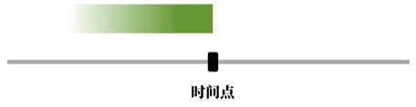- The rabbit waited until the wolf stopped by.兔子一直在等，直到大灰狼来串门.
- The rabbit didn’t eat any carrot until the wolf stopped by. 兔子直到大灰狼来串门才吃了胡萝卜.
一…就…，相当于一个动作紧跟着另一个动作，引导词：as soon as
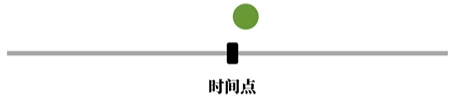- The rabbit will eat a carrot as soon as the wolf leaves. 大灰狼一离开兔子就要吃一个胡萝卜.
下次…，引导词： the next time
- The rabbit will share the biggest carrot the next time the wolf stops by. 下次大灰狼来串门，兔子会一起分享最大的胡萝卜.
3.3.2 地点副词从句
- 引导词： where
- The rabbit ate the carrot where he found it. 兔子在找到胡萝卜的地方吃了它.
- 引导词：where的强调形式：wherever, everywhere, anywhere（不管哪里，任何地方,所有地方）
- The rabbit will go wherever（强调: “不管”哪里） he can find a carrot.
- The rabbit sees a carrot everywhere （强调: “所有”地方） he goes.
- The rabbit can eat a carrot anywhere （强调: “任何”地方） he likes.
3.3.3 比较副词从句
- 英语形容词:比较级
- smart, smarter ：聪明，更聪明
- big, bigger：大,更大
- beautiful, more beautiful ：漂亮,更漂亮
- 英语语句:比较级
- He is smarter than me. 他比我聪明.（这是比较口语化的表达，正式的表达：He is smarter than I (am)）
- This carrot is bigger than that one. 这根胡萝卜比那根大.
- She is as beautiful as Snow White. 她和白雪公主一样漂亮.
- 比较副词从句：“更…”
- He is smarter than I am.
- This carrot is bigger than that one is.
- She is more beautiful than Snow White is.
- 上面2其实是3的省略
- 比较副词从句：“同样得…”
- He is as smart as I (am)/me.
- This carrot is as big as that one (is).
- She is as beautiful as Snow White (is).
- 比较副词从句：“越…越…”
- The more you practice English, the more fluent you become. 你越多练习英语，你就越流利.
- The more coins you give me, the more videos I make. 你投币越多,我做的视频也越多.
- The harder you try, the luckier you get. 越努力越幸运
3.3.4 条件副词从句
假设的问题：if…
- 真实的假设（真实条件句）：If the rabbit sees a carrot, he will eat it.
- 和事实相反的假设（虚拟条件句）：
- If I saw a carrot, I would eat it.
- If I had seen a carrot, I would have eaten it.
- 如何理解“主将从现”
- “现”：一般现在时，强调的时一般（习惯/客观事实），和时间其实没关系
- “将”：一般将来时，强调非常确定会发生的事。
- 我不去确定我是否会看到胡萝卜，所有条件句中只能“去掉时间信息”，表达一个“一般的，默认的，普通的”状态，使用一般现在时态。而不是用明确会发生的“一般将来时态”。
- 但是如果这个假设的条件成立，在这种情况下，我一定会明确地做吃胡萝卜这个动作，所以主句,也就是在这种条件成立的情况下，使用一般将来时态。表示明确在将来会发生的动作
条件句总是比主句在时态上落后一个时间段：
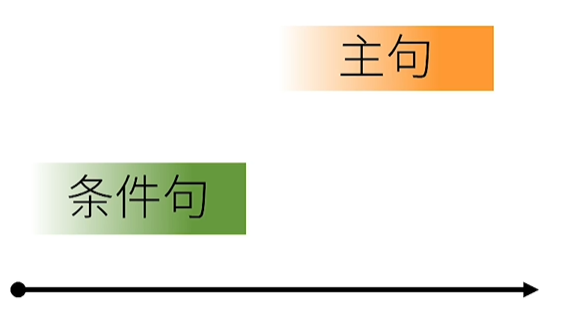其他引导词
- unless：Unless you like this video,you will not give it a thumbs-up. 除非你喜欢这个视频,不然你不会给它点赞.
- provided: Provided that my video is excellent, you will give it a thumbs-up. 如果我的视频很棒,你会给它点赞.
- as long as: As long as I make excellent videos, you will remain my follower. 只要我一直做高质量视频，你就会继续关注我
- in case: In case you don’t understand, please comment below. 如果你不明白,请在下方评论.
3.3.5 让步副词从句:
- 如何理解让步：
- 中文意思：即使/就算…也…
- 【假设】 从句做出一个假设，主句给出一个和一般事实相反的情况
- Even if I see a carrot, I will not eat it. 即使我看到了一根胡萝卜,我也不会吃它.
- 【事实】 从句给出一个事实，但是主句给出一个和一般情况相反的结论
- Although I see a carrot, I will not eat it. 尽管我看到了一根胡萝卜,但我不会吃它.
- though/ even though 可以替代 Although
- 【错误示范】Although（引导词） I see a carrot, but（连词） I will not eat it. 到底算复杂句还是复合句呢？
- no matter/regardless of +疑问句
- no matter/regardless of +疑问句 : 不管如何…(对未知情况的假设), 主句给出一个和一般事实不一样的情况
- No matter/Regardless of what happens, I will not eat the carrot. 不管什么事会发生，我都不会吃这胡萝卜.
- No matter/Regardless of who orders me, I will not eat the carrot. 不管谁命令我，我都不会吃这胡萝卜.
- No matter/Regardless of how hungry I am, I will not eat the carrot. 不管我有多饿,我都不会吃这胡萝卜.
3.3.6 方式副词从句
- 假设：对比虚拟语气的假设
- I feel good as if I had just eaten a carrot. 我感觉良好,就好像我刚吃了根胡萝卜一样.
- 主句：交代实际情况；从句：一个和实际相反的假设
- If I had eaten a carrot, I would have felt good.如果我刚才吃了根胡萝卜的话，我现在就会感觉良好.
- 主句：不是实际情况；从句：一个和实际相反的假设
- You spend (so much) money as if you were a millionaire.
- If you were a millionaire, you would spend a lot of money.
- I feel good as if I had just eaten a carrot. 我感觉良好,就好像我刚吃了根胡萝卜一样.
- 阐述
- Eat the carrot as I do. 像我一样吃胡萝卜.(完整：像我吃胡萝卜一样 吃胡萝卜)
- Leave the carrot as it is.别动这胡萝卜.（完整：像这胡萝卜原本那样，别碰它. ）
- as引导的从句，并不是某种事实的假设，而是事实的阐述。可以把它理解为”正在”发生的某种方式
- 改成方式（the way）的形容词从句来表达
- You spend money the way (in which) millionaires do.
- Eat the carrot the way (in which) I eat it.
3.3.7 原因副词从句
- The rabbit ate the carrot because he was hungry. 兔子吃了胡萝卜，因为他饿了.
- because引导从句，形成复杂句，so为连词，形成复合句。所以两者不能同时使用
- Since you are hungry, you can eat the carrot. 既然你饿了,你可以吃这胡萝卜.
- As you were not here, we ate the carrot without you.因为你之前不在这儿,所以吃胡萝卜没带你一个.
- because/Since/As的区别
- 因果/语气：because > since > as
- because引出的是实实在在的因果关系：
- Because this video is excellent, you should give it a thumbs-up. 因为这视频很棒,所以要点赞.
- since引出的是大家都已经知道的情况：
- Since all my videos are excellent, you should give this video a thumbs-up. 众所周知,英语兔只出精品，所以要点赞.
- as引出的是显而易见的事实：
- As I have thick skin, I’m begging you for a thumbs-up. 显而易见我脸皮很厚,所以求你点赞
- because引出的是实实在在的因果关系：
- 语序
- because：①because从句+主句；主句+because从句
- since/as：since/as从句 + 主句
- 因果/语气：because > since > as
- because/for的区别
- You must really like me, for you have given all my videos a thumbs-up.你肯定很喜欢我英语兔,因为你给我所有视频都点赞啦.
- 这里的for是连词，构成复合句（并列句），而不是从句
- You must really like me：推测的结果
- you have given all my videos a thumbs-up：这么推测的原因
- Because you like me, you have given all my videos a thumbs-up. 因为你喜欢我,所以你给所有英语兔视频都点赞了.
- you like me：原因
- you have given all my videos a thumbs-up：结果
- You must really like me, for you have given all my videos a thumbs-up.你肯定很喜欢我英语兔,因为你给我所有视频都点赞啦.
3.3.8 目的副词从句
- In order that I could finish the video in time,I pulled an all-nighter. 为了及时完成视频,我熬夜不睡(肝视频).
- In order that I could finish the video in time：从句，表目的
- I pulled an all-nighter：主句，表事件，为了目的所作的努力（动作）
- I pulled an all-nighter so that I could finish the video in time.
- I could finish the video in time: 目的
- I pulled an all-nighter：为了目的所作的努力
- so that 不能放在句首
- 目的从句中一般使用情态助词can,could,may,might,should,would等,因为这样能更好体现目的性。
3.3.9 结果副词从句
- I ate a lot of carrots for lunch so that I wasn’t hungry at all in the afternoon.
- The temperature was low so that the lake froze. 气温很低,所以湖结冰了.
- the lake froze ： 结果
- so that 和 so 的区别
- I like this video, so I’ll give it a thumbs-up.
- so连词，形成复合句（并列句）
- so that 引导的是从句，解释说明数据的情况，是主句产生的结果
- so(形容词)… that …
- I ate so many carrots for lunch that I felt sick afterwards. 我吃了那么多胡萝卜,导致(结果是)我之后感到不舒服.
- such(名词性成分) … that …
- It was such a tasty carrot that I ate it all at once. 这是个如此好吃的胡萝卜,以至于(结果)我一下次就吃完了它.
- a tasty carrot：名词性成分的词
- It was so tasty a carrot tha I ate it all at once.
- tasty形容词
- It was such a tasty carrot that I ate it all at once. 这是个如此好吃的胡萝卜,以至于(结果)我一下次就吃完了它.
4. 冠词
4.1 不定冠词
4.1.1 发音：
- a 辅音
- an 元音
4.1.2 用法：
4.1.2.1 泛指
- 泛指某一个人或物
- I saw a rabbit. 我看到一只兔子。
- 这里的“一只”并不完全强调数量上的一只，而是泛指某一只兔子，是指兔子这一物种中的某只。所以咱们还可以把这句话翻译成“我看到兔子了”。
- 如果咱们第一次提到某个事物，从某种意义上来说也是泛指。在第一次提到之前，说话者和话者可能都不知道指的是具体的哪个人或物。
- 我今天看到只兔子（只：泛指，对应不定冠词）.这兔子跑得很快（这：特指上文中提到的，对应定冠词）.
- I saw a rabbit. The rabbit ran fast
- I saw a rabbit. 我看到一只兔子。
- 泛指某一类
- A rabbit is smarter than a wolf.
- 兔子比狼聪明。A rabbit 泛指兔子这类动物，a wolf 泛指狼这类动物
- 但实际上上句也可以理解为：(某)一只兔子比(某)一只狼聪明.
- 至于到底是泛指某一类事务，还是某一个事务。需要结合具体语境。
- 泛指某一类事物最好用零冠词
4.1.2.2 表示数字”1”
I gave you a hundred carrots. = I gave you one hundred carrots. 我给你一百个胡萝卜.
4.1.2.3 表示 “每”
I eat 10 carrots a day. = I eat 10 carrots every day. 我每天吃10个胡萝卜.
4.1.2.4 主谓一致
- 一个人：a teacher and video creator 一位老师兼视频创作者
- 两个人：a teacher and a video creator 一位老师和一位视频创作者
4.1.2.5 固定表达
- have a good time 玩得开心
- as a result 因此;结果
- in a hurry 匆忙地
- all of a sudden 突然
4.2 定冠词：the
4.2.1 发音
- /ðə/：辅音前
- /ðiː/：元音前
4.2.2 用法
4.2.2.1 特指
- 再次提到的人或物：双方都明白提及的是什么
- I saw a rabbit. The rabbit ran fast.
- 用在序数词和形容词的最高级前
- the first rabbit 第一只兔子
- the biggest carrot 最大的胡萝卜
- 独一无二的名词前
- the sun 太阳
- the moon 月亮
- the earth 地球
- the Great Wall 长城
4.2.2.2 特指: 非常少见
- 出现在西洋古典乐器
- I like playing the piano. 我喜欢弹钢琴. (泛指”弹钢琴”这件事)
- I like playing a piano. 我喜欢弹钢琴. (指”弹一架钢琴”的动作)
- play the guitar 弹吉他
- play the violin 拉小提琴
- play the flute 吹笛子
- The computer has changed our way of life. 计算机改变了我们的生活.（泛指computer这里工具）
4.2.2.3 在形容词前：指代一类人
- the rich 富人
- the poor 穷人
- The rich should help the poor.
4.2.2.4 固定表达
- all the time 一直;总是
- by the way 顺便
- out of the question 不可能;没门
4.3 零冠词
零冠词是指名词前不用冠词的情况，它的主语作用是泛指。
4.3.1 复数泛指
- Rabbits are smart. 兔子聪明.
- 这里泛指兔子这里动物很聪明。这比用A rabbit泛指一类更好。没有歧义。
- Computers have changed our way of life.
- Computers泛指计算机这类工具，比用the Computer更好，没有歧义。
- Water is important.水是重要的。
- Water是不可数名词，复数形式也是water，可表示泛指
- We breathe air. 我们呼吸空气。
- air 为不可数名词
4.3.2 泛指概念
- Summer is hot. Winter is cold. 夏天热，冬天冷。
- Summer 表示夏季这一概念，Winter 表示冬季这一概念
- 为什么不用：I saw rabbit.
- 因为rabbit是很具象啊，一般说到兔子。要不就是泛指兔于这一类动物，要不就是特指一只兔子，很少用它表达抽象的概念。
- 在表达一类人或事物时，最保险，出现频率相对更高的是复数泛指。Summers are hot. 也是可以的。
- I want to play football.泛指足球运动，这里的football也是抽象的概念
- play piano：按道理也是可以的。但是人们还是习惯加the
- I like geography. 泛指地理这门学科
- in spring 在春天 （泛指季节：春天）
- in August 在八月（泛指月份：八月份）
- on Monday 在周一（泛指星期：周一）
- on National Day 在国庆节（泛指节日：国庆节）
4.3.3 专有名词
London is the capital of England．
4.3.3 固定表达
- from time to time 不时地
- face to face 面对面地
- out of question 毫无疑问
5. 介词（preposition）
5.1 介词的原理
介词：preposition。 可以理解为“前置词”，用来提供附加信息。附加信息包括：时间信息;空间信息;方式信息;逻辑信息(原因;目的;对象…)…
5.2 介词的构成形式
- 简单介词：in,to,with
- 短语介词: 通过一个短语，实现介词的功能。它视作介词，不单独表示完整意义
- by way of 通过…方式
- at the end of 在…的最后
- along with 和..一起
- because of 因为…
- previous to …之前
- 合成介词
- in + to = into 在…之内
- on + to = onto 在…之上
- with + in = within 在…之内
- not + with + standing = notwithstanding 尽管
- 分词介词
- including 包括…
- regarding 关于…；至于…
- considering 鉴于…；考虑到…
- given 考虑到…；如果…
5.3 介词学习的误区
学习英语介词，最忌讳的，最需要避免的，就是拼命找个中文介词对号入座。因为如by，in，on，with等介词，往往是一词多义，无法对应。
5.4 介词学习的窍门
- 介词学习的困难
- 很多介词意义太多
- 很多介词意义易混淆
- 解决方式：
- 本义（空间含义） + 引申义（非空间含义）
- 但是每个词的每个含义都用空间含义去推导，这并不现实，这种方法只能帮助我们更好的去记忆。
5.5 常见英语介词用法
5.5.1 表示空间的介词
in: 在…里面（表示在一个空间的内部）
- in the house 在房屋里
- in the park 在公园里
- in the country 在国内
on: 在…上面（在一个物体的表面上）
- on the table 在桌子上
- on the floor 在地板上
on the tree 和 in the tree
on 表示与物体有接触，on the tree 可以引申为长在树上，是树本身所有的。
- There are some apples on the tree. 树上结着一些苹果。 苹果是树本身有的
in只是在树里，外来的事物进入树里，
- There are some birds in the tree. 树上有一些鸟。鸟不是树自己长出来的。
at：在某处，表示地点的时候，指一个确定的具体的“点”
- at the corner of the street 在街道拐角
- The bus stopped at the bus station. 公交车在车站停下了.
over： 做空间介词时，表示 “在…上方”。有可能接触，也可能不接触。
- 如果和物体接触，一般表示“覆盖,全部遮佳“的意思。
- The mother put a blanket over the child. 妈妈把毯子盖在孩子身上.
- 如果不和物体接触：表示 “在…的正上方”
- the bridge over the river 在河上的桥
- the lamp over the table 在桌上方的灯
- 更常见表达上空这个含义，为 “越过上空”
- The plane flew over the mountain. 飞机飞越过高山.
- The rabbit climbed over the fence. 兔子爬过栅栏.
- 如果和物体接触，一般表示“覆盖,全部遮佳“的意思。
above: 表示 “高于某个平面之上”，在…上方。这个和over的静态含义 “在…正上方”很像。
同样不接触物体，但是over强调正上方，而above高出物体平面就可以- the sky above us 在我们上方的天空。
under 在…之下，与over相对。表示物体知觉可以接触，也可以留有一定空间。
- There is a ball under the desk. 书桌下有个球.指在某物的正下方，含有垂直正下方的意思。
below 表示 在…下发；与above相对。表示低于某个平面，可以是正下方，也可以不是
- The rabbit dived below the surface of the water. 兔子潜入了水下.
near 在…附近；在…周边
- near the hospital 在医院附近
by 与 beside：做空间介词时，都表示 “在…旁边”，通常可以互换
- There is a hotel by/beside the river. 在河边有个旅馆.
next to ：靠近；紧挨着
- the building next to the school 紧挨着学校的建筑
near/by/beside/next to near 表示在附近，往往有一些距离 There is a school near here. 这附近有个学校. by/beside/next to 都表示比较接近，往往可互换 The rabbit sat by/beside/next to the wolf. 兔子坐在狼旁边.across: 一般指从表面穿过，与介词on那个“表面” 相似，是在物体表面上发生的行为
- go across the street 穿过马路
- swim across the river 游过河
through：从内部穿过，与介词in那个“内部”相似。是从物体内部发生的动作。
- go through the tunnel 穿过隧道
- walk through the forest 穿过森林
- look through the window 透过窗户看
past 表示 经过，路过。
- The rabbit walked past the wolf without saying any words. 兔子从狼身边经过，没说一句话.
in front of : 在…前方
- The rabbit is standing in front of the wolf. 兔子站在狼前面.
- before一般不用做空间介词，除非表达“在公众/观众前”
- She played the violin before the crowd. 她在众人前拉小提琴.
behind: 在…之后
- The wolf is standing behind the rabbit. 狼站在兔子后面.
between 在…之间
- 侧重在两者之间，有时会与and一起用。 构成 between … and …
- The carrot is between the rabbit and the wolf. 胡萝卜在兔子和狼之间.
- 也可用于多者之间，在三者及以上之间分别两两比较时，也可以用between
- You shouldn’t eat between meals.你不应该在正餐之间吃东西.（比如早餐和午餐之间，午餐和晚餐之间）
- 侧重在两者之间，有时会与and一起用。 构成 between … and …
among 在…之间。一般指三者及更多人和物之间。
- The rabbit is standing among the carrots. 兔子站在胡萝卜之间.
- 在现代口语中，也会用between取代among
round 和 around：表示 围绕；环绕。两者做介词意思相近，可互换
- trees round/around the field 环绕田地四周的树
- around the world 全世界
along: 沿着；顺着
- Walk along this road. 沿着这条路一直走.
to 向…；朝…
- go to school 去上学
toward/towards 朝着…的方向，跟to在此意上意思相近
- walk toward home ：朝家走
onto 到…上面
- The rabbit jumped onto the table. 兔子跳到桌子上
into 到…里面；到…内部
- walk into the house 走进房子
out of 从里面出来
- get out of the car 从车里出来
opposite 在…对面
- Our school is opposite my house. 我们的学校在我家对面..
against
- 与…相反
- We were rowing against the current. 我们逆水行舟.
- 倚，靠
- The rabbit was leaning against the tree. 兔子正倚着一颗树.
- 与…相反
up 沿…向上
- up the hill 上山
- up the river 沿河流逆流而上
down 沿…向下
- walk down the road 沿着这条路走下去
- roll down the hill 从山上滚下去
off：离…有一定距离
- New Zealand lies off the eastern coast of Australia. 新西兰离澳大利亚东海岸有一些距离.
5.5.2 表示时间的介词：
不少表示时间的介词和它们表示空间的“本源”用法是对应的。
in 本意在…里面，在范围相对较大的时间内
- in 2030 在2030年
- in winter 在冬季
- in December 在12月
on 本意 在…之上，表示时间时，范围相对就小
- on Monday 在星期一
- on Christmas Day 在圣诞节
at 因为空间范围很小，所以引电到时间上也类似。表示非常确定的时间点，一般说几点钟用at
- at 6 o’clock 在6点
- at noon 在中午
- at sunset 在太阳落山时
- at dawn 在黎明时分
- at (the age of) 6 在6岁时
during 本意就是“持续”，表示持续一段时间，可以翻译为 “在…期间”
- during the past 2 days 在过去的2天里
- during the past 2 weeks 在过去的2周里
- during the past 2 years 在过去的2年里
for 在古英语中for有“之前，由于”的意思，作为时间介词时一般和原因相关。这里用作时间介词，可以引申为“（因为…）持续”
- I’ve been learning English for 2 years. 我持续学习英语两年时间.
since 自从…
- since last week 自从上周以来
before 在…之前。 一般用于表示时间以及次序
- before Monday 星期一之前
- before 2020 在2020年之前
after 在…之后。 和before相对。 一般用于表示时间以及次序
- after two years 两年之后
from…to… 从…到…
- from 9:00 to 10:00 从9点到10点
by： 其本意为 在…附近/旁边。引申为时间上的“不超过…的边”，即”不迟于…/在…之前“
- by 2 o’clock 在2点之前
- by tomorrow 在明天之前
by与before 在表示时间点之前时，by和before的含义近似，但是before是泛指某个时间点之前， 而by相当于限定了一条时间线，更侧重于不超过,不迟于严这条时间线 Please finish your homework by 8PM. 请在晚.上8点前完成你的作业.(这里更加强调：8点是截止时间，不能在迟了) Please finish your homework before 8PM. 请在晚上8点前完成你的作业.until 直到…为止
- until 8 o’clock 直到8点为止
5.5.3 表示方式的介词
- in … 方式。 in + 语言 表示“用某种语言（的方式）…”
- Let’s talk in English. 让我们用英语对话.
- in的本意是”在…里面”,in English 可以引申为“我们说的话，写的字，都是在其他一堆英语话语里”。也就成了”我们说英语“的意思
- through ： 通过…方式
- We succeed through hard work. 我们通过努力工作而成功.
- through 的本意为 从…中间穿过。引申为“通过”某种方式或经历。
- by 通过…
- We learn English by watching videos. 我们通过看视频学英语.
- by 的本意为在…旁边, 引申为 “相关，离不开，倚靠…”的含义。我们学英语是依靠看视频”的，也就是通过视频学英语。
- I go to work by car. 我开车去上班. 意思就是我依靠汽车这个交通方式”去上班。
- with 用… ： 一般加具体的有形工具。因为with本意有 和…一起的意思
- We write with pens. 我们用笔写字.
- “我们和笔一起完成写字这个行为”的意思。
- on： 接电子通讯设备比较多。
- We talked on the phone. 我们通过电话进行了交谈.
- on的本意: 在…上面。 online线上。而电话上就是最早的线上。
5.5.4 表示原因的介词
- for 因为…; 由于…
- This rabbit is famous for being able to speak. 这只兔子因会说话出名.
- with : with 本意是“和…一起”。这里引申为“…是和…分不开的原因”.
- The rabbit is shaking with cold. 兔子冷得发抖.
- because/because of:
- because + 从句； because of + 名词：
- The rabbit didn’t go out because of the rain. 因为下雨，兔子没出去.
- due to/ owing to / on account of : 由于;因为 (介词的固定搭配)
- The rabbit didn’t go out due to / owing to / on account of the rain.
- because + 从句； because of + 名词：
5.5.5 表示关于的介词
- about :关于。 本意为 在…外面。关于某人或某事的一些情况，不就是“外围相关信息”吗?
Could you tell me something about your school? 你能给我讲一些关 于你学校的的事情吗? - of:此外的，附加的。在古英语的本意是“离开”。“离开了的”在这里引申为“此外的，附加的“，及”相关“的信息。
- He thought of something important. 他想起了一些重要的事情.
- think about ： 想起关于…的事
- think of 想起…
- on 的本意在…上面。把一个具体的事儿当成平面，其上的讨论也是关于的意思。
- Would you like some advice on learning English? 你想要些关于学习英语的建议吗?
5.5.6 表示数值的介词
- at：表示价格，比率等数值点
- at a high price 在一个高的价格(点)
- at a fast rate 以一个很快的速率(点)
- by: 后接度量标准
- They get paid by the hour. 他们按小时拿报酬.
- for：以…的价钱
- I bought these books for 100 Yuan. 我买这些书花了100元.
5.5.7 表示状态的介词
- in: 表示在…状态中
- in progress 在进行(状态)中
- in a dilemma 处于进退两难的境地中
- on: 受到…的支持（的状态）
- on a diet 在节食 (在节食支持的状态)
- on drugs 吃药 (在药物支持的状态)
- at 在某个状态，表示明确的某个“状态点”
- at work 在工作 （在工作的地点/状态）
- at dinner 在吃晚饭 （在吃饭的地点/状态）
- under 在(框架，前提)下
- under construction 在施工中
- under discussion 在讨论中
5.5.8 表示排除的介词
- besides ： 除了…还
- I like many things besides carrots. 除了胡萝卜,我还喜欢很多东西.
- 我也喜欢胡萝卜，没有剔除胡萝卜
- except：除了…
- Everyone went to the party except the rabbit. 大家都去了聚会，除了兔子.
- 兔子没去，剔除兔子。
- expect for 除了…。用法和except相似，但是往往用来对之前的内容进行反驳
- The party is great except for the loud music. 聚会很棒,除了嘈杂的音乐.
- 提出和The party is great相反的原因，也就是“美中不足的是…”
5.6 介词短语
- preposition（介词） + object（宾语/介词宾语）
- 介词宾语可以由多种词类来充当：
- 名词：in the room
- 代词：in it
- 数词：the age of20
- 形容词：in general
- 副词： from here
- 介词 + 介词宾语 = 介词短语
- in the room
- on the roof
- under the table
- 介词短语和短语介词不同
- 介词短语：不是介词，可以表达完整意义
- 短语介词：视作介词，不单独表完整意义
- 介词短语可以充当各种句子成分
- 主语： Between 10 and 11 is a good time for me. 10点到11点间适合我.
- 主语补语/表语:The meeting is at 2 o’clock. 会议在2点钟.
- 定语: This is the key to the house. 这是房子的钥匙.
- 宾语补语: I found the carrot in good condition. 发现那个胡萝卜保存完好.
- 状语：最常见， 描述动作的时间，地点，方式，等等。
- The rabbit ate a carrot at noon. 中午,兔子吃了-根胡萝卜.
- The rabbit is eating a carrot in the kitchen. 兔子正在厨房里吃一根胡萝卜。
- The rabbit likes traveling by car. 兔子喜欢乘车出游.
5.7 介词固定搭配
- 介词和动词/形容词/名词的搭配形成固定搭配，很难通过 “本意+引申义” 来推导
- for example 比如
- at ease 自在
- in turn 依次
- need for something 需要…
- long for 渴望…
- read for 为…准备
- 动词+介词 的搭配会产生出和原来词语完全无关的含义
- check out 退房
- make out 分辨
- put out 熄灭
- pass out 晕倒
- work out 健身
- look out 小心
- knock out 打晕
6. 名词
6.1 名词的分类
- 普通名词和专有名词
- 普通名词：日常生活种常见的事物，如rabbit
- 专有名词：专指一个事物或人的名字，它们的首字母需要大写
- Earth 地球
- Asia 亚洲
- China 中国
- Bank of China 中国银行
- New Year 新年
- Michael 迈克尔
- 单数名词和复数名词
- one rabbit 和 two rabbits
6.2 普通名词
6.2.1 可数普通名词
- 个体名词：像rabbit那样，表示单独的个体，肯定是可数的
- 集体名词：多个个体的集合，是一个统称。
- 集体名词到底是单数还是复数需要看具体情况，如team
- 指一个队伍(单数)：This is a large team. 这是一个大团队.
- 指队伍中的所有成员(复数): The team are working together. 团队成员在互相合作.
- 一些集合名词基本只有复数意义：
- police(警察的集合)
- people(一群人的集合）
- 有的是总称，只有单数意义
- baggage(所携带行李的总集合)
- furniture(某个地点所有家具的总集合）
- 这种总称的不可数，和water这种物资的不可数是不一样的。这种总称上的不可数体现在意义上。
- 集体名词到底是单数还是复数需要看具体情况，如team
6.2.2 不可数普通名词
- 物资名词：water n. 水; air n.空气; beer n.啤酒; mill n.牛奶; wood n.木材; paper n.纸
- 抽象名词：peace n.和平 honesty n.诚实
6.3 专有名词
- 通常由于专有名词独一无二的特性，导致它是不可数的。（重要）
- 可数与不可数是相对的（不重要）。需要具体语境，具体分析。
- There’s a Michael downstairs looking for you. 楼下有个叫Michael的人在找你.
- 有很多叫Michael的人，楼下那个Michael是其中之一
- Which Michael are you talking about? Are you talking about the Michael whom we met last week?
你在说哪个Michael?你在说上周我们见到的那个Michael吗?- the Michael 这里的Michael是特指，是不可数的。
- There are three Michaels in my class. 我班上有三个(叫)Michael(的同学).
- There’s a Michael downstairs looking for you. 楼下有个叫Michael的人在找你.
6.4 到底什么是可数的
我们在面对可数与不可数时，需要理解，我们说的是什么。如果说的是具体的东西显然是可数的。
- water指水域时，显然是可数的：two waters 两片水域； international waters 国际水域
- 水不可数，装水的杯子是可数的：two glasses of water
- two types of fruit
- two pieces of bread
- It’s a pleasure. pleasure愉快，是一个抽象名词，是不可数的。但是这里的pleasure是指代愉快的事情，显然是可数的
6.5 名词所有格
6.5.1 ‘s所有格
- 有生命的人和物表示所有权（常用）
- the rabbit’s carrot 兔子的胡萝卜。carrot的所有权属于rabbit
- the team’s success 队伍的成功
- Michael’s computer Michael的电脑
- Tom and Jerry’s room Tom和Jerry共有的房间
- Tom’s and Jerry’s rooms Tom和Jerry各自的房间
- 非人物后表示某种性质：(a’s b,a限定了后面的名词b) (不常用)
- today’s news 今天的新闻
- the moon’s brightness 月亮的亮度
- a meter’s length 一米的长度
- China’s reputation 中国的声誉
- the paper’s quality 纸张的质量
- the peace’s influence 和平的影响.
6.5.2 of所有格：
- 非人物后表示某种性质
- the quality of the paper 纸张的质量
- the influence of the peace 和平的影响
- the news of today 今天的新闻
- the brightness of the moon 月亮的亮度
- the length of a meter 一米的长度
- the reputation of China 中国的声誉
6.5.3 双重所有格
I am one of Michael’s friends.
= I am a friend of Michael’s.
我是Michael众多 朋友中的一员。
可以理解为：第一个of提表示性质，第二个是 ’s 表示所有。
a friend of Michael’s 就是用of后面的Michael’s来修饰限定of之前的fiend.
a photo of Michael’s Michael拥有的照片中的一张
a photo of Michael Michael出镜的照片之一
7 代词（pronoun）
7.1 人称代词
- 人称代词有哪些：I / we / you / he / they / she / it
- 人称代词的格(宾格)：me / us / you / him / them/ her / it
- 主格和宾格的常见疑问：
- You and I 做主语：You and I saw him. 你和我看见了他.
- you and me做宾语：He saw you and me. 他看见了你和我.
7.2 物主代词
- 形容词性物主代词：my/our/your/his/her/its/theirs
- 名词性物主代词：mine/ours/yours/his/hers/its/theirs
- It is my carrot.The carrot is mine. 它是我的胡萝卜.这胡萝卜是我的.
7.3 反身代词
- 用于称呼自己：myself/ourselves/yourself(你自己)/yourselves(你们自己)/himself/herself/itself/themselves
- I saw myself. 我看见我自己
7.4 强调代词
- 形式和反身代词一样，体现在语法上的区别
- The rabbit washed himself（反身代词作宾语）. 兔子把自己洗白白.
- The rabbit washed the carrots himself（强调代词作状语）. 兔子自己洗了胡萝卜.
- The rabbit will do it himself. 兔子将亲自去做它(一件事).
7.5 相互代词
- We should help each other. 我们要相互帮助
- each other: 两者之间
- one another： 三者之间/三者以上之间
- 但现实中许多母语人士并不遵循这点
7.6 指示代词
- this/these：指代和说话人较近的事物，这/这些； that/those：指代和说话人较远的事物，那/那些
- This is a rabbit. 这是一只兔子.
- These are carrots. 这些是胡萝卜。
- That is a wolf. 那是一只狼.
- Those are apples. 那些是苹果.
- 可以限定范围：
- this rabbit 这只兔子
- that rabbit 那只兔子
- these rabbits 这些兔子
- those rabbits 那些兔子
7.7 不定代词
- many；much
- many 代替/修饰可数名词的复数。many rabbits
- much 代替/修饰不可数名词。 much water
- a few, few; a little, little
- a few: 后接可数名词复数，（肯定意义）一些
- a few carrots 一些胡萝卜
- few: 后接可数名词复数，（否定意义）几乎没有
- few carrots 很少(几个)胡萝卜
- a little: 后接不可数名词，（肯定意义）一些
- a little water 一点水
- little: 后接不可数名词，（否定意义）几乎没有
- little water 很少水.
- a few: 后接可数名词复数，（肯定意义）一些
- some；any
- some 一些，一般用于肯定句中
- The rabbit needs some carrots. 兔子需要一些胡萝卜.
- any 一些，一般用于否定句/疑问句中
- Does the rabbit need any carrots? 兔子需要一些胡萝卜吗?
- The rabbit doesn’t need any carrots. 兔子不需要任何（一些）胡萝卜.
- 如果我们希望得到对方正面肯定回答时，会在句中用some
- Would you like some coffee? 你想要的一些咖啡吗?
- any表示“任何一个”时，可以用在肯定句中
- The rabbit can eat any carrot. 兔子可以吃任何一个胡萝卜.
- some 一些，一般用于肯定句中
- each；every
- each和every表示“每…”，后接单数
- each carrot / every carrot 每一根胡萝卜
- each可做代词，单独做主语
- There are many carrots. Each is big. 这有很多胡萝卜.每个都很大.
- every必须接名词，不可单独作主语
- each 表示2个或者2个以上的每一个
- There are many carrots on each side of the street.街道两旁有许多胡萝卜.
- every 表示3个及3个以上的每个
every side of the street道路只有两边，不可能有3边
- each和every表示“每…”，后接单数
- either；neither
- either：两者中的每一个。做主语，谓语动词要单数
- Give the rabbit this or that carrot. Either is good. 给兔子这根或者那根胡萝卜. (两者中)哪一个都很好.
- Either of the carrots is good. (两个)胡萝卜哪一个都很好.
- neither：两者中每一个都不；表否定。做主语，谓语动词要单数
- Don’t give the rabbit this or that carrot. Neither is good. 不要给兔子这根或那根胡萝卜. (两者中)哪一个都不好.
- Neither of the carrots is good. (两个)胡萝卜哪一个都不好.
- either：两者中的每一个。做主语，谓语动词要单数
- both；all
- both是指”两者都“，做主语，谓语动词用复数
- Both of the two rabbits are cute. 两只兔子都很可爱.
- all是指“三者及以上都”，做主语，谓语动词用复数
- All of the rabbits are cute. 全部兔子都很可爱.
- both是指”两者都“，做主语，谓语动词用复数
- other；the other；another
- other：另外的，其他的。作形容词修饰名词
- I like this carrot. I don’t like other carrots. 我喜欢这根胡萝卜.我不喜欢其他的胡萝卜.
- the other：特指两者中的另一个，代词
- This carrot is bigger than the other carrot. 这根胡萝卜比另一根胡萝卜大.
- another：泛指3个/3个以上另一个，不确定具体指哪一个
- The rabbit doesn’t like this carrot. Give him another carrot. 兔子不喜欢这个胡萝卜，给他另一个.
- other：另外的，其他的。作形容词修饰名词
- one： The rabbit doesn’t like this carrot. Give him another one. 兔子不喜欢这个胡萝卜，给他另一个.
- 复合不定代词
- 所谓复合不定代词,就是由every-,some-,any-,no- 和其他某些代词构成不定代词
- 指人的复合不定代词
- everyone / everybody 每人;人人
- someone / somebody 某人
- anyone / anybody 任何人
- no one / nobody 没人
- 指物的复合不定代词
- everything 每件事;一切事
- something 某事.
- anything 任何事
- nothing 没有事
- 例句：
- Everyone is here. 每个人都到了，
- The rabbit needs something to eat. 兔子需要一些吃的东西.
- Nothing can stop the rabbit from eating carrots. 没什么能阻止兔子吃胡萝卜.
- 形容词在修饰复合不定代词时要后置：
- The rabbit has something important to do. 兔子有些重要的事情做.
- The rabbit has nothing important to do. 兔子没有重要的事情做.
7.8 疑问代词
- who与whom
- Who（做主语） saw the rabbit? 谁看见兔子了?
- Whom（做宾语） did the rabbit see? 兔子看见谁了?
- Who（做宾语） did the rabbit see? 兔子看见谁了?
- 当疑问代词做介词的宾语紧跟介词就必须用whom
- From whom did the rabbit get the carrots? 兔子从谁那得到了胡萝卜?
- 如果介词放在句尾，也可以用who：Who did the rabbit get the carrot from?
- what：What did the rabbit see? 兔子看见了什么?
- which：Which is the best carrot? 哪一个是最好的萝卜?
- whose：Whose is this carrot? 这是谁的胡萝卜?
7.9 连接代词
- 连接代词的作用：引导主语从句,宾语从句和表语从句
- 连接代词：who / whom / whose / what / which / whoever / whomever / whatever / whichever
- 例句：
- 引导宾语从句：I don’t know who you are. 我不知道你是谁.
- 引导主语从句：What he said isn’t true. 他说的话不是真的.
- 引导表语从句：The important thing is which rabbit is smarter. 重要的是哪只兔子更聪明.
- whoever / whomever / whatever / whichever 中的 ever 表示 “任何，一切”的意思，起强调作用
- The rabbit wants to eat whatever he likes. 兔子想吃他喜欢的任何东西.
7.10 关系代词
- 作用：专用于定义从句
- 关系代词：who / whom / whose / which / that / as
- 例句：
- The rabbit who became hungry ate a carrot.
饿了的兔子吃了根胡萝卜. - The rabbit whom I saw ate a carrot.
我看见的那只兔子吃了根胡萝卜. - The rabbit whose ears are long ate a carrot.
那只耳朵长的兔子吃了根胡萝卜. - The rabbit ate the carrot which/that I bought.
兔子吃了我买的胡萝卜。 - The rabbit ate the carrot, as was expected.
兔子如预料的那样吃了胡萝卜.
- The rabbit who became hungry ate a carrot.
8 数词
8.1 基数词
8.1.1 基数词的构成形式
- 1-10：one two three four five six seven eight nine ten
- 11-19：eleven twelve thirteen fourteen fifteen sixteen seventeen eighteen nineteen
- 20-90：twenty thirty forty fifty sixty seventy eighty ninety
- 几十几：twenty-one sixty-six ninety-seven
- 超过100的数字：one hundred, two hundred, nine hundred,
three hundred and sixty-five(365), nine hundred and ninety-nine(999), one hundred and one(101) - 上千到上亿的数字：one thousand， two thousand， eight thousand，
three thousand five hundred and forty-six（3546）， million（百万），billion(十亿)
four hundred and seventy-eight billion eight hundred and seventy-three million
four hundred and sixty-seven thousand eight hundred and twenty-three （478,873,467,823）
8.1.2 基数词可充当的句子成分
- One and two(主语) is three. 一加二等于三.
- It costs fifty (Yuan)(宾语). 它要(花费)50元，
- There are two hundred (定语) students. 有二百个学生.
- You two (同位语) can go with me. 你们两个可以跟我一起去.
8.1.3 表示不确切的数量
- hundreds of： 成百的…
- thousands of：成千的…
- thousands of carrots 数以千计的(几千根)胡萝卜
- tens of thousands of carrots 数以万(多个”十个千”)计的胡萝卜
- hundreds of thousands of carrots 几十万根胡萝卜
- millions of：成十亿的…
8.2 序数词
8.2.1 序数词的构成形式
- 第1-第19：基数词+th，first, second, third, fifth, eighth, ninth, twelfth
- 第20-第90：twentieth，thirtieth，fortieth，fiftieth，sixtieth， seventieth， eightieth， ninetieth
- 第几十几，第几百几：twenty-second（第22）；fifty-sixth（第56）； one hundred and first（第101），
hundredth （第100）thousandth(第1000) - 序数词的缩写形式：
- 阿拉伯数字 + th : 7th(第七)，13th（第13）
- 1st（first），2nd（second），3rd（third）
- 用到这3个词的情况：21st，53nd，63rd，101st
- 11th，12th，13th
8.2.2 序数词可充当的句子成分
- 主语：The fifth to pay the bill will get this prize. 第五个付款的(人)将得到这个奖品.
- 宾语：Please give me the second. 请给我第二个.
- 定语：He is the 13th person to fall over this morning. 他是今天早.上第13个摔倒的人了.
- 表语：She was the fifth to pay the bill. 她是第五个付款的人，
- 绝大部分序数词前面需要+the，表示特指。但有些情况不需要
- This is my first book. 这是我的第一本书.已经有物主代词限定了，所以不需要the
8.2.3 基数词的表达VS.序数词的表达
- 基数词的表达有一些和序数词相近：
- Room 315 315号房(第315的房间)
- Page 200 第200页
- Catch-22 第22条军规.
- the second lesson 第二课：指第二节课，如一天有7节课，指这天的第二节课
- lesson 2 第二课：指一门课程的第二课时（第二章）
8.3 数词的用法
8.3.1 分数
分子基数词，分母序数词，分子大于1，分母需要用复数
- one third 1/3
- three fifths 3/5
- one second = a half 1/2
- one fourth = a quarter 1/4
- two and one third 2（1/3） 二又三分之一
8.3.2 小数
基数词 + point + 个位的基数词
- one point three four 1.34
- zero point five seven 0.57
- twelve point eight nine six 12.896
8.3.3 百分数
- twenty-five percent 25%
- two point five percent 2.5%
8.3.4 倍数
- 如何表达倍数：half，twice，three times
- 倍数+the+计量+of：
This carrot is half/twice/three times the size of that one.
这根胡萝卜是那一根的一半/两倍/三倍大小 - **倍数 + as… as…**：
I have half/twice/three times as many carrots as he has.
我有的胡萝卜是他有的一半/两倍/三倍. (我有两倍于他的胡萝卜.) - 倍数+比较级+ than：
I can eat three times faster than he can.
我吃东西的速度比他快三倍. - by + 倍数：
I have increased my income by three times.
我增加了三倍收入。
【倍数的表达, 网站：https://www.bilibili.com/video/BV1Ab4y1r7pr】
数词+times+比较级：A is 3 times bigger than B.
= 数词+times+as...as：A is 3 times as big as B.
= 数字+times+the+度量名词：A is 3 times
A is 3 times bigger than B.= A is 3 times as big as B.
这个等式在学界是有争议的，但是大部分人都认可
A is 300% bigger than B. A(100)*(3+1)=B(400)
double两倍 triple(treble)三倍 quadruple四倍 fold翻一翻
A will double next year. A明年会翻一翻 A(100)*2=B(200)
triple(treble)三倍 quadruple四倍 同理
It will have a 3-fold increase. 增加了2倍，原来100，现在300
by是指数字增长或下降”了“多少，to是增长或下降“到“多少
A has increased by 3 times.
= A has increased to 4 times.
= 原来100，现在400
8.3.5 数字符号和算术
- 2 plus 2 is 4. 2+2=4.
- 4 minus2 is 2. 4-2=2
- 2 multiplied by / times 3 is 6. 2 X 3 = 6.
- 8 divided by 4 is 2. 8/4=2
- 2 squared is 4. 2的平方等于4.
- 2 cubed is 8. 2的立方等于8.
- 4 is more than 3. 4 > 3
- 2 is less than 3. 2 < 3
8.3.6 时间
- at seven 7:00
- a quarter past seven = seven fifteen 7:15
- half past seven 7:30
- ten to eight = seven fifty 7:50
8.3.7 日期
英式：日/月/年
- （the）12th December,2020
- the不需要写出来，但是要读出来
美式：月/日/年
- December （the） 12th,2020
- the不需要写出来，但是要读出来
年的写法：
- 500 B.C. 公元前500年
- 500 A.D. 公元500年
- 2020 公元2020年
- 2020’s / 2020s 21世纪20年代
- 1980’s / 1980s 20世纪80年代
8.3.8 长度
表示长宽高：
- 长 long（adj.） length（n.）
- 宽 wide（adj.） width（n.）
- 高 high（adj.） height（n.）
基数词+单位词(复数) +形容词(长宽高)
- The river is 1000 meters long.
这条河有1000米长.
基数词+单位词(复数) + in+ (长宽高)名词
- The river is 1000 meters in length.
这条河有1000米长.
8.3.9 面积和体积
This room is 20 by 35 meters.
这个房间是20米X35米.
This room is 700 square meters.
这个房间有700平方米.
This box is 8 by 5 by 6 centimeters.
这个盒子的长宽高分别是8厘米, 5厘米和6厘米.
8.3.10 温度
37 degrees centigrade 37°C centigrade=Celsius 摄氏度
37 degrees Fahrenheit 37°F Fahrenheit 华氏度
10 degrees below zero 10° 在大家都知道centigrade的情况下，可以省略centigrade
9 形容词
9.1 形容词的用法
9.1.1 定语
前置定语
a hungry rabbit 一只饿了的兔子前置定语的顺序：限定词+(主观)特征+尺寸+形状+新旧+颜色+来源+材料+用途
a beautiful big round new black Chinese wooden table
中文形容词的顺序和英文形容词顺序会有不同：张崭新的漂亮的黑色中式木质大圆桌
后置定语
当形容词修饰复合不定代词时，需要定语后置：
somebody nice 某个好人
anybody absent 不在场的人
everything possible 所有可能的事儿
nothing wrong 没不对的事儿
形容词短语做定语
carrots good for the rabbit 对兔子有好处的胡萝卜
the rabbit eager to eat carrots 急于吃胡萝卜的兔子 to eat 非谓语动词
=the rabbit that is eager to eat carrots 急于吃胡萝卜的兔子the rabbit busy eating carrots 忙着吃胡萝卜的兔子 eating 非谓语动词
=the rabbit that is busy eating carrots 忙着吃胡萝卜的兔子
9.1.2 表语
一些以a开头的形容词,像是alive,asleep.alone，只做表语
The rabbit is alive/asleep/alone.
兔子是活的/睡着的/孤单的.如果想要做定语，需要换词：
a living/sleeping/lonely rabbit
一只活的/睡着的/孤独的兔子某些表身体状况的形容词，如ill,well也只能做表语
The rabbit is ill/well.
兔子是生病的/健康的.不能说：
an ill/well rabbit如果想要做定语，需要换词：
a sick/healthy rabbit
只生病的/健康的兔子
9.1.3 宾补
Carrots make rabbits happy.
胡萝卜让兔子开心。
9.1.4 状语
The rabbit came home, tired and hungry.
兔子回到家,又累又饿.
9.2 形容词的构成（复合形容词）
简单形容词： happy，white等，本身就是形容词
复合形容词：由多个词构成
形容词+形容词/现在分词/过去分词
a red-hot coal 一块红热的煤
a good-looking rabbit 一只好看的兔子
a new-born baby 一个新生儿
副词+形容词/现在分词/过去分词
副词+形容词：all-round 全面的
副词+现在分词：hard-working 努力的
副词+过去分词：recently-built 最近建成的
形容词/数词+名词
形容词+名词+ed：修饰的主语是人，可以转成whose定语从句，名词需要加ed
- white-haired = …whose hair is white 白发的
- kind-hearted = …whose heart is kind 好心的;善良的
形容词+名词：不是修饰人，不能转成whose的定语从句，不需要加ed
- a long-distance call 长途电话
数词+名词
- a one-way street 单行街道
名词+形容词/现在分词/过去分词
名词 + 形容词：
a snow-white rabbit = a rabbit that is white like snow
一只雪白的兔子名词 + 现在分词：
a carrot-eating rabbit = a rabbit that eats carrots
一只吃胡萝卜的兔子名词 + 过去分词
a heart-broken rabbit = a rabbit whose heart is broken
一只心碎的兔子
9.3 形容词的比较级和最高级
9.3.1 形容词比较级和最高级的构成
- 一般情况：比较级=形容词+er；最高级=形容词+est
- long longer longest
- tall taller tallest
- 以e结尾的词：比较级=形容词+r；最高级=形容词+st
- late later latest
- large larger largest
- 辅音字母 + y结尾：y变i+ er/est
- happy happier happiest
- busy busier busiest
- 重读闭音节单词：双写辅音字母+er/est
- big bigger biggest
- fat fatter fattest
重读闭音节: 闭音节：一个音节，以元音结尾为开音节，以辅音结尾为闭音节. 重读闭音节的特定： 1. 单词的最后三个字母是：辅音字母1+元音字母+辅音字母2 2. 最后一个音节重读（单音节的默认这个音节重读，也就是最后一个音节重读） - 多音节词/部分双音节词：more/most + adj
- interesting more interesting most interesting
- difficult more difficult most difficult
- 不规则动词变化：
- good better best
- bad worse worst
- many more most
- little less least
9.3.2 形容词比较级的用法
…比…更…:
This carrot is bigger than that one.
这根胡萝卜比那根大.This carrot is three times bigger than that one.
这根胡萝卜比那根大三倍.…和…一样…
This carrot is as big as that one.
这根胡萝卜跟那根胡萝卜一样大.This carrot is three times as big as that one.
这根胡萝卜是那根的三倍那么大.越来越…
prettier and prettier
越来越漂亮more and more beautiful
越来越漂亮The rabbit is smarter and smarter.
兔子越来越聪明了.越…(原因),就越…（结果）
句型：the +比较级(原因) +补充内容, the +比较级(结果) +补充内容.
假设：The more carrots the rabbit eats,the smarter he will become.
兔子吃胡萝卜越多,就会变得越聪明.过去事实：The more carrots the rabbit ate,the smarter he became.
兔子吃了越多越多胡萝卜,变得越来越聪明.有时候可以根据语境进行省略：The more, the better. 越多越好.
9.3.3 形容词最高级的用法
最高级的应用需要设置一个范围：in + 地点 或者 of + 所属范围
Magic mirror on the wall, who is the fairest one of all?
魔镜魔镜告诉我,谁是世上最美的人?序数词 + 最高级 ： 第几最
Magic mirror on the wall, who is the second fairest one of all?
魔镜魔镜告诉我,谁是所有人当中第二漂亮的女人?形容词最高级在修饰名词时需要加定冠词 the，表特指，因为独一无二的
Snow White is the most beautiful woman in the world.
白雪公主是世界上最漂亮的女人.当most 表示 很，非常的含义时，相当于very much，就不需要加定冠词 the
The queen is a very beautiful woman.
皇后是一位非常漂亮的女人.
10 副词
10.1 副词的用法
10.1.1 副词修饰哪些词性
副词修饰动词
This is a fast rabbit. 这是只快速的兔子. fast是形容词
This rabbit runs fast. 这只兔子跑得快. fast是副词修饰动词
副词修饰形容词和副词
This is a very fast rabbit. very修饰形容词
This rabbit runs very fast. very修饰副词
This carrot is very good. 这胡萝卜很好.
I’m doing very well. 我很好. (我一切顺利)
副词修饰名词
This rabbit here runs very fast. 这里的这只兔子跑得非常快。 here是副词，修饰rabbit
副词修饰句子
Obviously，This rabbit here runs very fast. 显然，这里的这只兔子跑得很快.
10.1.2 副词在句中作什么成分
最常见：作状语或者定语
Obviously，This rabbit here runs very fast.
This is a very fast rabbit.
作表语
The wolf is abroad. 狼在国外.
副词作表语只能是be动词后面。
宾语补语
Let me in! 让我进来! （in这里不是介词，而是副词，修饰me，作me的宾补）
Let me out! 让我出去!
10.2 副词的形式
- 同拼写，同义/近义，即和形容词的意义差不多：fast
- 同拼写,异义，比如pretty：adj.漂亮的，adv.相当地
- She is a pretty wolf.
- This is a pretty smart rabbit。
- This is a fairly（adv.相当地，非常地） pretty wolf.
- 副词=形容词+ ly,同义/近义：quick：adj.快的; quickly: adv. 快地
- This is a quick rabbit.
- This rabbit runs quickly.
- 副词=形容词+ ly,异义：large：adj. 大的； largely：adv. 大体上，基本上
- This is a large carrot.
- I largely only eat carrots.
10.3 副词的种类
- 方式副词：
- This rabbit runs fast. 跑的方式
- 方式副词可以放在：句首，句中，句尾。当然并不是所有的副词都这么灵活。比如fast就不行。
- Suddenly, the driver turned left. 左转的方式 suddenly
- The driver suddenly turned left.
- The driver turned left suddenly.
- 程度副词
- 程度副词 + 形容词/副词：用于描述形容词/副词的某种程度
- This is a very fast rabbit.
- This rabbit runs very fast.
- 地点副词
- 地点副词的主要作用是：限定地点
- 地点副词一般位于句尾；表强调时也可以位于句首
- The rabbit eats carrots indoors/outdoors.
- The rabbit eats carrots upstairs/downstairs.
- Here you can relax and forget about all your troubles.
- 时间副词
- 时间副词在句中：限定时间，限定动作发生的时间
- 一般位于句尾;也可位于句首/句中
- The rabbit ate some carrots yesterday.
- The rabbit is eating some carrots now.
- The rabbit will eat some carrots later.
- The rabbit has already eaten some carrots.
- 频率副词
- 大多位于行为动词之前, be动词/助动词/情态动词之后
- The rabbit eats carrots every day.
- Sometimes, the rabbit eats carrots.
- The rabbit usually eats carrots.
- The rabbit eats carrots three times a day.
- I will always love you. 我将永远爱你（always在will助动词之后，love行为动词之前）
- 疑问副词
- 用来构成特殊疑问句的副词
- 对 the rabbit eats carrots 提问
- 对方式提问：How does the rabbit eat carrots?
- 对地点提问：Where does the rabbit eat carrots?
- 对时间提问：When does the rab bit eat carrots?
- 对原因提问：Why does the rabbit eat carrots?
- 连接副词
- 引导名词性从句的副词
- How the rabbit eats carrots is interesting.
- I don’t know where the rabbit eats carrots.
- That is why the rabbit eats carrots.
- 关系副词
- 引导形容词性从句
- This was the place where the rabbit ate the carrot.
- This is the reason why the rab bit ate the carrot.
- That was the day when the rabbit ate the carrot for the first time.
- 句子副词
- 一般在句子开头, 用逗号和主句分开
- Obviously, this rabbit here runs very fast.
11 连词
11.1 并列连词
连接有着”并列的,同等语法地位的”单词，词组或句子.
并列关系
The rabbit is smart and cute.
The rabbit teaches English and makes videos.
Both the rabbit and the wolf like carrots.
The rabbit not only teaches English but also makes videos.
The rabbit teaches not only English but also German.
The rabbit likes neither apples nor pears.
兔子既不喜欢苹果也不喜欢梨子.Neither the rabbit nor the wolf likes apples.
兔子和狼都不喜欢苹果.（就近原则：like的动词单复数根据the wolf来定）选择关系
What does the rabbit like? Apples or carrots?
Either the rabbit or the wolf is going to the party this evening.
不是兔子就是狼会去要参加今晚的聚会.The rabbit neither ate nor slept yesterday.
兔子昨天既没吃也没睡.Hurry up, or/or else/otherwise you’ll be late.
快点,否则你要迟到了.Either the rabbit or I am going to the party this evening.
不是兔子就是我将要参加今晚的聚会.（根据就近原则，谓语动词用am）Not only the rabbit but also his friends are going to the party this evening.
不仅兔子,还有他的朋友们也会去参加今晚的聚会.转折关系
The rabbit cooked some carrots, but he didn’t eat any.
The rabbit cooked some carrots, yet he didn’t eat any.
I haven’t eaten yet, yet I’m not hungry.”
我还没吃,但我还不饿.（第一个yet是副词，第二个yet是连词）因果关系
The rabbit is busy, so he won’t go to the party tonight.（前因后果）
The rabbit is busy. Therefore, he won’t go to the party tonight. （前因后果，Therefore通常用于书面）
The rabbit will skip lunch, for he is busy making a video.（前果后因）
11.2 从属连词
从属连词是连接英文主句和从句的
11.2.1 引导名词性从句
that：引导主语从句、宾语从句、表语从句、同位语从句。that只起连接作用;在句中没有实际意义;在宾语从句中可以省略.
That the rabbit ate the carrot was obvious. (主语从句)
I saw (that) the rabbit ate the carrot. (宾语从句)
I don’t know if the rabbit ate the carrot. (宾语从句)
The fact is that the rabbit ate the carrot. ( 表语从句)
The question whether the rabbit will eat the carrot is on all our minds. (同位语从句)
11.2.2 引导副词性从（状语从句）
- 时间状语从句的连词：when, while, as, before, after, until, since
- 地点状语从句的连词：where, wherever
- 比较状语从句的连词：than, as
- 条件状语从句的连词：if, unless
- 让步状语从句的连词：although, though, even though, even if, while
- 方式状语从句的连词：as, as if, as though
- 原因状语从句的连词：because(从属连词;连接主句和从句;不是并列连词;不与并列连词so连用), since, as
- 目的状语从句的连词：in order that, so that, so
- 结果状语从句的连词：so…that…, such…that…, so
12 其他
12.1 限定词
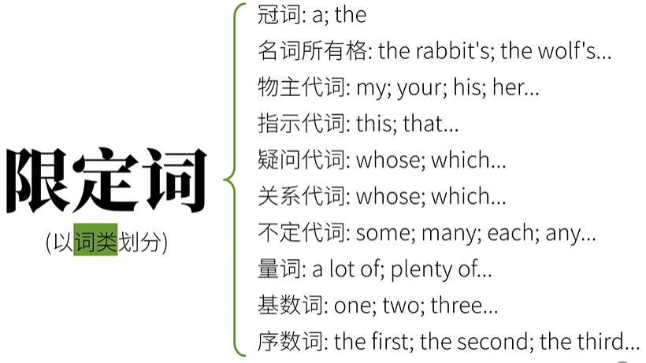half my carrots ; my half carrots
her last carrot ; last her carrot
all ten carrots ; ten all carrots
12.2 被动
英语语态分为：主动语态 + 被动语态
强调动作的执行者：主动语态
强调动作的承受着：被动语态
被动语态的构成：be + 过去分词
表达动作执行者： by + 动作执行者
五种基本句型的被动语态
主+谓：无法表示被动
主+谓+宾：
The rabbit ate the carrot.
The carrot was eaten by the rabbit.
省略动词执行者： The carrot was eaten主+谓+宾+宾
The rabbit gave the carrot to the wolf.
The wolf was given the carrot by the rabbit.
The carrot was given to the wolf by the rabbit.The rabbit gave the wolf the carrot.
The carrot was given to the wolf by the rabbit.
The wolf was given the carrot by the rabbit.主+谓+宾+宾补
The wolf invited the rabbit to her party.
The rabbit was invited to the party by the wolf.The rabbit made the wolf laugh.（make接的是省略to的动词不定式）
The wolf was made to laugh (by the rabbit).主+系+表(主语补语)：无法表示被动
被动态和时态,语气,情态助动词相结合
The rabbit has eaten the carrot.
The carrot has been eaten by the rabbit.
The carrot has not been eaten by the rabbit.
Has the carrot been eaten by the rabbit?The rabbit would have eaten the carrot.
The carrot would have been eaten by the rabbit.
The carrot would not have been eaten by the rabbit.
Would the carrot have been eaten by the rabbit?The rabbit might eat the carrot.
The carrot might be eaten by the rabbit.
The carrot might not be eaten by the rabbit.
Might the carrot be eaten by the rabbit?
12.3 倒装
一般语序：主语 + 谓语动词
倒装 ： 谓语动词 + 主语
完全倒装(谓语动词完全在主语前)
副词/介词短语在句首的倒装
地点副词在向首的倒装(here; there…)
There goes the last bus. >>> The last bus goes. 末班公共汽车开走了.
时间副词在句首的倒装(now; then…)
Now comes the wolf’s turn! 现在轮到大灰狼啦.
表运动方向的副词在句首的倒装(in, out, up, down, away…)
Up went the carrots into the air. 胡萝卜飞向空中.
介词短语在句首的倒装
At the table sat a rabbit. 桌边上坐着一只兔子.
主语补语(表语)的倒装
作为表语的 形容词/分词/介词短语/such 置于句首时，需要完全倒装
Seated on the ground is a group of rabbits. 席地而坐的是一群兔子们.
If you seat yourself somewhere, you sit down. 使 (自己) 坐下
seated himself at the desk 在桌旁坐了下来
Such were the wolf’s tricks. 这就是大灰狼的把戏.
部分倒装(仅助动词提前)
句首有否定意义词时的倒装
Never before have I eaten such a delicious carrot.
I have never eaten such a delicious carrot.
我以前从未吃过如此美味的胡萝卜.句首有”only”时的倒装
Only in this way can we grow delicious carrots.
只有用这种方法我们才能种出美味的胡萝卜.Only then did the rabbit meet the wolf.
直到那时,兔子才遇见了狼.“if..should…”构成虚拟语气的倒装
If I should win the lottery, I would buy a huge pile of carrots.
Should I win the lottery, I would buy a huge pile of carrots.
如果我能赢得大奖,我就会买一大堆胡萝卜.固定句型中的倒装
Rabbits love eating carrots; so do wolves.
兔子喜欢吃胡萝卜,狼也是.A：I was afraid.
B：So was I.(= I was afraid, too.)
A：我害怕.
B：我也是.The rabbit can’t ride a bicycle; neither/nor can the wolf.
兔子不会骑自行车,狼也不会.
形式倒装(谓语动词不提前,仅将强调内容提至句首)
感叹句中的倒装
What a delicious carrot it is!
多么美味的一根胡萝卜!比较级句型中的倒装(如”the more… the more..”)
The more carrots you eat, the healthier you become.
If you eat more carrots, you will become healthier.
吃胡萝卜越多,你就越健康.“however”; “whatever”..引导让步状语从句时的倒装
However long this video is, you should watch it till the end.
不论这个视频多长，你都应该看完.”as“; ”though“…引导让步状语从句时的倒装
Much as he likes the carrot, he doesn’t want to eat it.
尽管他非常喜欢胡萝卜，但他不想吃它.
12.4 强调
这里说的是强调表达，而不是某种特定的句式
- 在口语中，可以通过语气进行强调
- 书面格式，也就是可以通过标点符号，粗体斜体进行强调
- 词汇强调：
强调词：really,very,just,ever…
Rabbits really like carrots! 兔子真的喜欢胡萝卜!
I eat very, very, very fast! 我吃东西很很很快!
I missed the very beginning of the movie. 我错过了电影刚刚开始那一段. very还可以强调名词
This is just unbelievable! 这绝对难以置信!
All I ever wanted is that carrot. 我所要的就是那根胡萝卜.
What in the world are you talking about? 你到底在说什么?
( in the world = on earth = the hell（语气更重） 强调 what)重复某个词做强调
He went on and on and on. 他说个不停.
He walked and walked and wal ked. 他走个不停.
助动词强调谓语动词，在肯定句中使用： do/dose
Rabbits do like carrots! 兔子确实喜欢胡萝卜!
I did give you a thumbs-up! 我给你点过赞啦~!
强调代词：
I can do it myself! 我自己能做! myself强调自己
I myself went there! 我本人去了那里! myself强调本人
- 强调句式
倒装句
I did not eat a single carrot yesterday.
Not a single carrot did I eat yesterday.
我昨天没有吃胡萝卜.I have never met a wolf.
Never have I met a wolf.
我从没遇见过狼.You go off!
Off you go!
你去吧!The wolf comes (here)!
Here comes the wolf!
狼来了!感叹句
The carrot is big!
How big the carrot is!
这胡萝卜真大! 用how强调bigYou’ve grown a big carrot!
What a big carrot you’ve grown!
你种了好大一根胡萝卜! 用what强调 a big carrotit + be动词+强调部分+ that … 句式
The rabbit will eat the carrot.
兔子将要吃这根胡萝卜.It is the rabbit who/that will eat the carrot.
是这只兔子将要吃胡萝卜.（who/that引导定语从句）I met a lovely rabbit in the field this morning.
我今早在田野中遇见一只可爱的兔子.强调主语：It was I that/who met a lovely rabbit in the field this morning.
是我今早在田野中遇见一只可爱的兔子，强调宾语：It was a lovely rabbit that/who I met in the field this morning.
有一只可爱的兔子,我今早在田野中遇见了它，强调地点状语：It was in the field that I met a lovely rabbit this morning.
就是在田野中,我今早遇见一只可爱的兔子.
(相当于但不是等于：where I met a lovely rabbit this morning)强调时间状语：It was this morning that I met a lovely rabbit in the field.
就是今早,我在田野中遇见一只可爱的兔子.
(相当于但不是等于：when I met a lovely rabbit in the field)
12.5 省略
12.5.1 词法省略
冠词省略
独一无二的的称号或者身份前的定冠词可以省略
The rabbit was appointed (the) chairman of the Carrotown Committee.
兔子被任命为胡萝城委员会主席.The wolf served as (the) head of our team.
狼是我们组的头儿(队长).并列关系：可以在不引发歧义的情况下省略第二个冠词
Both the rabbit and (the) wolf will be invited to the party.
兔子和狼都会被邀请参加这个聚会.Is this bunny a boy or (a) girl? .
这只小兔子是男孩还是女孩?用and连接两个(表示性质身份的)名词时，有一种可能是:指代的是同一个人或事物。那么,有冠词和无冠词往往是不同的意思,不能随意省略：
a teacher and video creator 一个人，老师并且是视频制作者
a teacher and a video creator 两个人，一个老师，一个视频制作者某些独立主格结构
The rabbit came in, carrot in hand. 兔子进来了，手里拿着一根胡萝卜.
The rabbit came in, (with a) carrot in (his) hand. 兔子进来了，手里拿着一根胡萝卜.
省略介词
时间介词
I ate 10 carrots (on) that day.
我那天吃了10根胡萝卜.I worked (for) 60 hours (in) last week.
我上周工作了60小时.做某事：很多表达动作中的介词往往也可有可，通常等于动名词转化成了现在分词
I am busy (in) making videos. 我正忙着做视频.
There’s no use (in) crying over spilled milk. 覆水难收. (英文谚语.字面意思:牛奶泼出来就没办法了.)
省略动词不定式
并列关系：
He wanted to stay here and (to) read. 他想待在这里读书.
不定式中的Bare Infinitive (裸不定式)
The wolf helped me (to) eat the carrot. 狼帮助我吃胡萝卜.
The wolf made me (to) watch the video. 狼让我看视频.
省略从句引导词
This is the rabbit (that) we met yesterday. 这就是我们昨天见到那只兔子.
The rabbit said (that) the carrots were tasty. 兔子说胡萝卜很美味.
12.5.2 句法省略
简单句的省略
祈使句：
(You) open the door, please. 请打开门. (祈使句)
感叹句：
What a smart rabbit (he is)! 多聪明的一只兔子啊!
How (fast) time flies! 时间过得真快啊!
口语表达：力求简洁，可省略很多重复的部分
A：What did you eat? 你吃了什么?
B：(I ate) a carrot. (我吃了)一根胡萝卜.A：Who ate the carrot? 谁吃了胡萝卜?
B：The rabbit (ate the carrot). 兔子(吃了 胡萝卜).A: Who is Papa Rabbit? 哪位是兔老爹?
B: I am (Papa Rabbit). 我就是(兔老爹).A: Would you like to eat a carrot? 你想来一根胡萝卜吗?
B: Yes, I’d like to (eat a carrot). 是的,我想(来一根胡萝卜).
并列句的省略：主要省略重复部分
The rabbit went home after work, and (the rabbit) ate a carrot.
兔子下班后回家,然后(他)吃了一根胡萝卜. （省略重复的部分）The rabbit has eaten a carrot, but the wolf hasn’t (eaten a carrot).
兔子吃了一根胡萝卜，但狼没(吃一根胡萝卜). （省略重复的部分）The story made the rabbit happy, but (the story made) the wolf sad.
这故事让兔子高兴,让狼悲伤.The rabbit likes carrots and the wolf (likes) apples.
兔子爱吃胡萝卜,狼(爱吃)苹果.复杂句的省略
从句中的省略
The rabbit will eat the carrot, but I don’t know when (he will eat it).
兔子要吃这胡萝卜,但我不知道啥时候(他吃它). (包含宾语从句)When (the rabbit was) young, the rabbit went to school every day.
当(他)小的时候,兔子每天上学.If （it is） possible, I’ll be there on time.
如果可能,我将按时到那. (包含条件状语从句)I can eat more carrots than you （can eat carrots）.
我能吃胡萝卜比你多, (包含比较状语从句)You are smarter than I (am smart).
你比我聪明. (包含比较状语从句)主句中的省略
如果很明显主句的主语是“我”，那么“I am”可以省略
（I am） sorry to hear that.
很抱歉听到这个.A：Shall I give you a thumbs-up? 我应该给你点赞吗?
B：If you’d like （you can give me a thumbs-up）. 如果你愿意的话.
12.6 主谓一致
12.6.1 语法一致
语法一致就是让句子的谓语动词在形式上和主语的单复数保持一致
单数主语/复数主语
可数名词复数 + 谓语动词复数
可数名词单数/不可数名词复数 + 谓语动词单数
Time is money. 时间是金钱. Time是单数，谓语动词is也是单数
Carrots are delicious. 胡萝卜好吃(是好吃的). Carrots是复数，谓语动词are也作复数
非谓语动词作主语时，也相当于单数名词：
To eat a carrot every day is good for the rabbit.
一天吃一根胡萝卜对兔子有好处(是有好处的).Eating carrots is healthy. .
吃胡萝卜很健康{是健康的).一般来说：用and连接主语，谓语动词用复数
The rabbit and the wolf are at the party.
兔子和狼都参加了聚会.假象主语
一些单词或者词组（as well as; except; but）会使得全语看起来是复数，但其实是单数，反之亦然。
The rabbit as well as other animal s gets a carrot.
兔子还有其他动物都得到了-根胡萝卜.All the animals except the wolf get the carrots.
除了狼,所有的动物都得到了胡萝卜.不定代词作主语：
不定代词作主语时，谓语动词要和不定代词背后的概念保持一致：
Everyone gets a carrot.
每一位都得到了一根胡萝卜.Each of them gets a carrot.
他们中的每-个都得到了一根胡萝卜.Both of them like carrots.
他俩都喜欢胡萝卜.Some of them are afraid of the wolf.
他们中有一些害怕狼.None of them get/gets a carrot.
它们中谁都没得到胡萝卜. 因为表示没有，没办法定义单复数，所以两个都可以Neither of them is/are afraid of the wolf.
他们都不怕狼. 因为表示没有，没办法定义单复数，所以两个都可以
12.6.2 意义一致
意义一致：主语意义上是单数，那么谓语单词用单数。如果主语意义为复数，则谓语动词也需要用复数。
同一个主语不同身份
The teacher and video creator is a rabbit.
这位老师兼视频创作者是只兔子.（主语只有一个）The teacher and the video creator are rabbits.
这位老师和这位视频创作者是兔子.(主语有两个：老师和视频制作者)复数名词的单数意义：
Ten years is a long time.
十年是一段很长的时间.(这里把Ten years看作一个整体，相当于：The duration of ten years is a long time.)Two coins isn’t a lot.
两枚硬币不算多.A knife and fork is needed for eating the carrot.
一副刀叉是吃胡萝卜必需的. （A knife and fork 一副刀叉，是一个整体）Bread and butter is also needed at dinner.
面包和黄油也是晚饭必需的.不定代词的单复数意义
All is quiet.
一切都很安静.(这里的all相当于everything)All are quiet.
大家都很安静.名词的形和意
形复意单(用单数谓语动词)：
Physics is my favorite subject.
物理是我最喜欢的学科.形单意复(用复数谓语动词)：
The cattle are on the hill.
牛群在山上.（cattle看起来是单数，但实际意义是复数）单复数同形名词(用单复数谓语动词都可)
A sheep is eating grass.
一只绵羊在吃草.
The sheep are eating grass.
一群绵羊在吃草.
类似的名词还有：deer,means,series,species。这些名词用单数和复数都可以，单数会产生不同的含义。集合名词(用单复数谓语动词都可)
The rabbit’s family is huge.
这个兔子家庭很大.(强调整体概念)
The rabbit’s family are all at home.
这个兔子家庭的所有成员都在家.(强调集合的成员)
类似的名词还有：army, police, audience, team。有些集合名词只能表示一个类别的事物，只能用谓语动词单数：
All the furniture here is expensive.
所有这里的家具都很贵.the + 形容词：可视作集合名词;可表单数意义，也可表复数意义：
The young are expected to learn from the old.
年轻人(们)应该向老人(们)学习.
The new is going to replace the old.
新事物会取代旧事物.
12.6.3 就近一致
就近一致:谓语动词的单复数由最近的主语决定。
or…： 或者…
either… or…：要么…要么…
Either you or I am going to the party.
不是你就是我会去参加聚会.
neither… nor…: 既不…也不…
not only… but also…: 不仅..而且…
Not only the rabbit but also many other animals like carrots.
不只是兔子,还有其他很多动物也喜欢胡萝卜.
there be
There is a carrot and two apples on the table.
桌.上有一根胡萝卜和两个苹果.
12.7 英文标点
12.7.1 逗号
断句，分割句子
Let’s eat rabbit. 让我们吃兔肉吧.
Let’s eat, rabbit. 让我们一起吃饭饭吧,兔兄.
列举
Let’s eat carrots, apples and bananas.
让我们吃胡萝卜,苹果和香蕉.Let’s eat carrots, red apples and bananas.
让我们吃胡萝卜,红苹果和香蕉.Let’s eat carrots, red apples, and bananas.
让我们吃胡萝卜,红苹果,和香蕉.同位语
I love my parents, the rabbit and the wolf.
我爱我父母,兔子和狼.I love my parents, the rabbit, and the wolf.
我爱我父母,兔子,和狼.引语：引用别人的话
The wolf said to the rabbit, “Let’s eat, rabbit.”
狼对兔子说:”我们吃饭吧,兔子!”(引语在后，首字母大写)“Well, yes, let’s eat, my dear wolf ,“ the rabbit said.
“哦,好的,我们吃饭吧,亲爱的狼”兔子说.(引语在前，末尾使用逗号)“Well, yes, let’s eat, my dear wolf ,“ said the rabbit.
“哦，好的,我们吃饭吧,亲爱的狼.”兔子说.(引语在前，末尾使用逗号)插入语：只是打断一下，做说明
“Well, yes,” said the rabbit,”let’s eat, my dear wolf.”
“哦,好的,”兔子说.“”我们吃饭吧，亲爱的狼.”(said the rabbit做插入语)This carrot, I think, is very tasty!
这根胡萝卜,我觉得，很好吃!(I think做插入语)并列句，复杂句
The rabbit was hungry, and he ate some carrots.
兔子饿了，于是他吃了些胡萝下.(并列句)The rabbit ate some carrots, but he was still hungry.
兔子吃了些胡萝卜,但他还是饿.(并列句)The rabbit didn’t eat more carrots, because he was on a diet.
兔子没吃更多胡萝卜,因为他在减肥. (复杂句) .附加疑问句
This is a tasty carrot, isn’t it?
这胡萝卜很美味,不是吗?时间地点数字格式
Dec, 2021
2021年12月Dec 1st, 2021
2021年12月1日Shanghai, China
中国.上海市Chengdu, Sichuan, China
中国四川省成都市英文长数字每3位用逗号隔开：473 ,394,237,831 ,521
12.7.2 句号
每句话的最后
缩略语之后：
Mr. Rabbit Rabbit先生
Dec. 十二月
8:30 A.M. 上午8:30
小数点和网址
12.7.3 冒号
- 列举: We have two lunch options: carrots, apples.
- 引语: The rabbit said, “I want to eat carrots.” = The rabbit: I want to eat carrots.
- 分开主标题和副标题：Carrots: Rabbits’ Favorite Food
- 时间表达：
12.7.4 引号
引号可以表示引用，单引号可用在双引号里面
“Please give this video a thumbs-up,” I always said,”and don’t tell me ‘I’ll do so next time.’”
“请给这个视频点赞,”我总是说, “而且别和我说’下次一定.’”
引号表示强调
Please don’t be a “freeloader”.
请不要做个”白嫖怪”.
书籍,报纸文章杂志等名称可以用引导表示。 英文表示书名还可以用斜体
Have you read “The Little Prince”?
你看过《小王子》吗?
12.7.5 破折号
用来解释说明
You’ve met my best friend - the wolf.
你见过我最好的朋友了——狼.
做句中说明部分的界限，比如同位语
All the animals - the rabbit, the wolf,and their friends - will go to the party.
所有的动物——兔子,狼和他们的朋友们——都将去参加聚会.
表示一句话突然中断
Carrots or apples? Hmm, I don’t - well,I guess I’ll choose carrots.
胡萝卜还是苹果?嗯,我不——好吧， 我还是选胡萝卜吧.
12.7.6 问号和感叹号
问号用于问句，感叹号用于感叹句
What on earth does the rabbit want?
兔子到底要什么啊?
What a picky rabbit!
好挑剔的一只兔子!
12.7.7 连字符和撇号
连词符用来构成
good-looking 好看的.
one-way 单行的
撇号构成所有格，缩略
the rabbit’s carrot 兔子的胡萝卜
I’d better (= | had better)我最好…
12.7.8 省略号
To be continued…
表示犹豫：Could you… give this video… a thumbs-up? 你能….给这视频…..点赞吗?
转载请注明来源，欢迎对文章中的引用来源进行考证，欢迎指出任何有错误或不够清晰的表达。可以在下面评论区评论，也可以邮件至 1909773034@qq.com